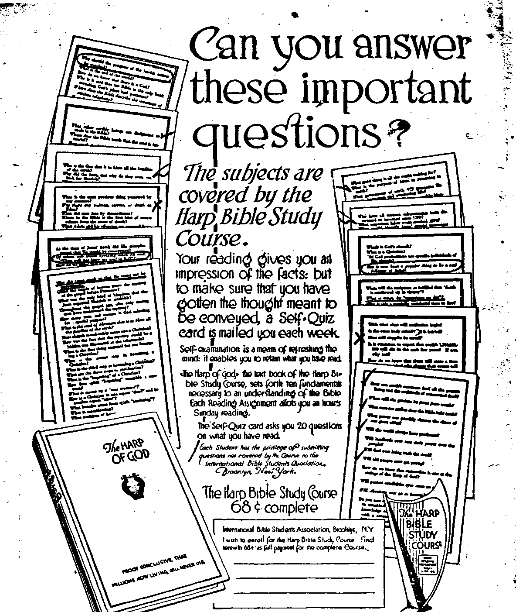

A JOUR-NAL-OF FACT HOPE-AND-CONVICTION
Jmte I, 190, VoL m. Na 71
I53B PuJIOAed every oiker IMI week at IS Concord Stroat, Vj|F Brooklyn, V. r, U. 8. x
Fire Ceata a Ct9T—»L*» « T«m
Canada tad Peceica Cevatxi* (UB
WEDNESDAY,. JUNE 7. IMS
CONTENTS of the GOLDEN AGE
LABOR AND ECONOMICS Why lien’s Hearts Are Fallin, Them
■ I- Buaineaa to the Beucuo - —
Buuahlng the Unions
SOCIAL AND EDUCATIONAL
The "New Woman” -MT Logie at Bvmte _____Ml American Pioneers______MT Modern Olarlty
InSnence of Christianity MS Slaves of Ctateta
Fainting Versus Romping M9 Liberty and Dm Itarever The Maternal Safeguard MO (poeta) TA
A Civilising Factor K" Let the Certain HU __
A Masculine Mentality —Ml (poem) ...... -TK
FINANCE—COMMERCE—TRANSPORTATION A Short Leeson tn VlnaiwWi ----------- .
POLITICAL—DOMESTIC AND FOREIGN The Political Situation __BS3 Direct LaglalaSloa
Religious Conditions —M3 Prltat Bala la Ireland —MS
HOME AND HEALTH Balanced Menu Hard to Gat ■
TRAVEL AND MISCELLANT Polar Baglou Getting Wann*_________——
RELIGION AND PHILO8OPHT
' A Study in Relativity _____--
, Chaining the Devil saw
Ite Fall of Modem Babylon _________________BT>
' Dark Day of May 11, 1T80 ...................... , .. . ST*
■todies In the “Harp af God” ----------------- STB
te wooDworru, mnxnHOi cm uam ciattoh j. woouworra.......mm
Kitrr J Unni .... sain Usama
■M. SrsnUrs. HL, ...111 Tm Crm a Corr — 31.00 a Tnaa ruoina omcan: Brittan: M Craven Terrace. Lancaster Gate, Londa« W.
1; CoMdlaH: 179 Dundas St W_ ' Toronto, Ontario; Autrelsifstt ■ 40* Oefltns St. Meltannen Anetnlla* Make itailllsirta to ne GeMoa So* Mated is lltud rtMO Mttr tt Imkkm a -
; Wmm ■ . BwKy, M. T„ Tihwhy, J«—V, UM ..... M«»l»rn
ij".: ~ : : ■” : 1 ’
h- The “New Woman” By 0. L. Bosenkraiu, Jr. ' . ■ •_ -
r-_.
■- TfTHEN the “new woman” came into the lime® f ’W light as a kind of “forlorn hope,” woman’s ’i! sphere of activity was much circumscribed. % Man enjoyed a virtual monopoly of bread-win' Ming, and any encroachment on his time-hon-’/' ■'ofed prerogatives was considered so indecorous J Me to be disreputable. Women as a class were T dependent on men for a livelihood; so marriage ’ was in consequence the logical goal of woman’s s ambition. Spinsters were generally held in low ’■"esteem, being regarded somewhat as incompe-^Hjtotswho had forfeited their daim to respect neglecting their youthful opportunities. Of ^^BOUrse there was a patent injustice in this which rankled in the hearts of those who for any rea-^ ipn had suffered the misfortune of involuntary ^j'tolibacy. But, in the main, as long as the old economic order prevailed, woman’s dependency , entailed no unmitigated hardship; for the average man cherished his women-folk and was proud to figure as their protector.
i?.
EFFECT OF MACHINEBY
'- The application of steam to mechanics revo* hrtionized industry and correspondingly effect-a revision of civilized society. The humdrum ' habits of centuries were displaced by the hurry and bustle of a new, busy, prosaic world, filled £ 4‘ with the clangor and drone of machinery, sor-,/ did with soot and dust and debris, impatient of ’ idealism, engrossed in profits. The domestic ■' village workshop was superseded by cooperative * production on an enormous scale after steam ' , and electricity had supplanted hand-, water-, -and horse-power as the motive forces of indus-ttrjr. The population moved en masse from the rural districts into the crowded industrial cen' ‘ ters. Society reorganized itself with startling \ rapidity to accommodate itself to the new conditions, and the effect oh woman’s status was
far-reaching. Immediately, it was to curtail her domestic sphere of usefulness by substituting factory products for home-made articles. To offset tins deprivation it introduced her to a new field of labor in the mills, where wpmaa soon demonstrated her value as aneccnomie factor by her patience, tractability, deftnoas of hand, and loyalty to her employers. In the * lighter occupations her unexcelled swiftness and accuracy as a worker made her more in demand than men, and not by any means' the fact, simply, that she could be hired for a lower wage. . .' . 1
that knowledge there awoke in her self-refianee,
instilling greater independence in her attitude toward life. She declared herself unwil^ng to '1 continue as “man’s plaything or his drudge.” Ambition was aroused in her to demand “higher ’
education”; and this being conceded, she availed herself of her opportunities to fit herself for commercial and professional life. In short, wo* man boldly challenged the hitherto unquestion- * ed superiority of man and, strange to rdatol compelled man, slowly and grudgingly, perhaps^ but with a certain admiration for her pertinao- J ity, to yield the point The culmination of her - -aspirations was political enfranchisement Chafing under the stigma of being included to the “infant, imbecile, and criminal class,” sho finally succeeded in convincing her brothers of _ ; the inconsistency of allowing her to hold property while denying her any voice in the expenditure of taxes. Today we have women jurymen, women mayors, and women legislator^
In the Old World, where her efforts were retarded by veneration for musty tradition, wo-
MB
man’s emancipation might have been long delayed. But across the Atlantic white men, from colonial times, have granted their women unusual respect and consideration. Women were scarce with the pioneers and therefore precious. The echo of this sentiment is still audible in the West, where even recently woman reigned a queen, as such exacting homage, though her position might be no more exalted than that of "biscuit shooter” or of the cow-man’s painted partner of the dance-hall.
But woman’s prestige was lower throughout most of the earth, where from* immemorial antiquity the sex-line had been sharply drawn. In ancient Hellas it was held infamous for either sex to affect the dress or the deportment of the other. “Women were not allowed to say, ‘Me Hercule!’ nor men, ‘Me Castor!’ ” It was effeminate in a man to wear his tunic hem below the knees or his sleeves lower than the elbows; and no reputable woman intruded on the male privacy of public life. Every banquet was a “stag party” then; women were content to stay in the background as the inspirers of men. The Roman sense of equity conceded the matron a legal status almost equivalent to that of our day. The Germanic tribes have been referred to as “woman worshipers,” owing to their supposed recognition of. something divine in woman’s nature; hence the great repute of prophetesses among them, and the divine honors sometimes paid their chieftainesses. But their “saga-men” extolled rather the tried loyalty of the connubial . relations than the ecstatic courtship of adolescence. But the “single standard of morality” obtained with them; and conjugal fidelity, it was their boast, was the foundation for their superior strength and stature.
INFLUENCE OF CHRISTIANITY
Ecclesiasticism repealed much of the feminine privilege, insisting on impHcit obedience and uncomplaining submission both from wife to husband and from -the unwashed nun to her "spiritual superiors.” Woman was described as a “pleasant evil, at once a honeycomb and a poison.” St. Augustine declared man alone to be made in the image of the Deity; woman was made merely in the image of man. To the "fathers of the church” both sex-equality and personal cleanliness suggested heathen licentiousness.
Nevertheless, the influence of Christianity
Baooxvrir, N. Y.
ameliorated the position of women by softening the brutality of the sons of Japhet and infusing spirituality into their conception of love. The artist of Hellas modeled a nymph or a goddess with faultless figure, but somewhat vacuous countenance. His medieval antitype volumin-ously draped the figure of his Madonna, but -etherealized the beauty of her face. JEstheti- ;" cism, the child of athleticism, gave place to ad-miration for character. The theme of troubador, the inspiration of tournament and "Court of ' k Love,” was the refinement of courtship to an exaggerated deference. The “gentil knight” placed the demoiselle, his “ladye love,” on a pedestal and wooed her with extravagant self- -abasements as superior clay.
Chivalry attained its zenith in the salons of France under the ancien regime, but it had never recognized the kilted fish-wife as entitled to its privileges; so she marched with her pike, in peasant camaraderie, beside liberty-capped Jacque with his bloody sabre when the Bastile was stormed. Napoleon established the bourgeois element in power, and they revived thqr •-idealization of woman. The same has persisted in a bourgeois society, even until our own day, more conspicuously so in our own "Sunny South,” steeped in sentimentalism since ante- -helium times — the deplorable result, thinks Mark Twain, of excessive admiration for Sir Walter Scott. ' , .
GOING TO EXTREMES
There exists in human nature a tendency to go to extremes. Man conceives a part, and then overplays it. This is exemplified in the decadence of Islam. Mohammed, the wily, astutely argued that the surest method of perpetuating the subjugation of the “infidel” was to appropriate their women. So he sanctified plurality . of wives, generously extending to all "true believers” the ancient perquisite of royalty Concealed behind the yashmak, and imprisoned behind the lattice-windowed zenana, denied edu-' cation and the dignity of “souls,” the influence of Moslem women must be ostensibly feeble. But the combined influence of the mothers, . 1
wives, and daughters of a whole people during many succeeding generations is bound to be tremendously potent, for either good or ilL The J debauching of its womanhood reacted to de- - '' bauch all Islam. Ignorance and inanity begat stupidity, bigotry, retrogression; and so stagnation ensued anff spiritual torpor.
t Our forefathers were ardent advocates of the “Trinder, kuchen, kirche” rule imposed by Kaiser ’Wilhelm. Sequestered delicacy and the “cling’ . «ng vine” appealed to their stalwart ruggedness.
Hard, daring characters sought their comple-' ment in opposites; so a dependent womanhood . ingratiatingly emphasized their need of strong protectors. Femininity was. ostentatious in its ’helplessness, cultivating timidity to the extreme of. silliness, and modesty to that of squeamishness. Our latter-day matter-of-factness discerns no indeEcacy in frankly saying “leg’’ instead of "limb.” The staple joke about the maiden lady who draped the legs of her tables and chairs excites wonder instead of merriment with the rising generation — is as stale as the “merry quip” of a feudal court-jester. -
FAINTING VERSUS ROMPING ~
The finickiness of yesterday has produced a revulsion of sentiment in favor of boldness bordering on indecorum. The weak heroine who fainted on the slightest provocation, who wept copiously with no valid excuse, or who beat a ftattoo with her heels in hysterical tantrums, ex-■ - cites modern contempt Even the mild excite-iqpnt of croquet gives place to the romp of bas-r ket-balL Catherine de Medici’s side-saddle is ’ "relegated to oblivion by a generation partial to knee-skirts, bobbed hair, and the one-piece bathing-suit The prude is succeeded by the hoyden, and an unperturbed public callously accustoms itself to the new fashions with hardly a wag of disapproval. .
The unchaperoned “flapper” with her “fag” is prone to sniff at the flounced hoop-skirts of her . prim grandmother, but the latter’s demureness often disguised a gentle ruggedness that required ne self-assertion. In a crisis she possessed * the strength of .character to stand behind her husband and load his spare rifle, while he beat off the circling red-skins from the “prairie schooner” that sheltered their brood. So, likewise, her remote Germanic fore-mothers fiercely defended their “wagon castles” from the ruthless legionaries. Our grandmothers could spin, and weave, and nurse the sick, and prepare wholesome food to build up strong, healthy bodies. With uncomplaining fortitude they endured unimaginable privations, lonelinesses, sorrows, and sacrifices to keep the home-fires kindled in the heart of a race.
.We owe an incalculable debt to the exemplary virtues of our mothers and, above all, to their superior purity, their greater freedom from vice and licentiousness than the men, which saved us from more rapid deterioration. Our ancestresses had their foibles, in spite of which they were the true, inspiration of our forefathers, more than any lure of land or of gold or of beckoning adventure.
THE MATERNAL SAFEGUARD
The maternal extinct is the safeguard of infancy, whereby is guaranteed perpetuation of posterity. The insurance of this safeguard has always been the protection afforded motherhood in the more quiescent life of woman provided by the regulations of social economy. Even savages recognized the necessity for man attending to the more dangerous, active interests, and for woman being guarded in the maternal function. The result was a division of labor whereby a disproportionate share of the drudgery of life often fell to the women. It is the tragedy of modern life that while it ameliorates much of the monotony and drudgery-of woman’s life, yet its economic conditions are such as to allow an inadequate protection for motherhood, owing to the subversion of the home. Moreover, motherhood is peculiarly menaced by a subtle change in woman’s character.
It is undeniable that- woman’s character is undergoing a metamorphosis palpable within even a generation. Participation in public life has been a hardening process. The severe struggle of tnodern industrialism tends to eliminate weaklings. Women are discarding their inherent weakness since the term “strong-minded woman” is no longer opprobrious; but the transition is yet incomplete, and the immediate effect serves to emphasize the unlovely traits of woman and to obscure her more attractive qualities.
▲ DARKER SIDE
Often, without predisposition to justice, woman is becoming unmerciful to the erring, uncompassionate to suffering; without correcting her propensity to frivolity and jealousy, she is developing one toward intemperance and brutality; without acquiring wide sympathies, she is abating the intensity of her natural sympathies. Her deceitfulness is. unrelieved by a sense of fair play; her gentleness and affection are perverted into cynicism, asperity, and superciliousness. Dismissing modesty, she manifesto brazen self-assertion and an inclination to impudence. Without love of truth, she is fanatical in her opinions and vehemently antipathetic to her opponents. Her approbativeness demands admiration even for her faults; the sex-lure is perverted to-consider man a dupe; coquetry and the feigned flight give place to the deliberate aggressiveness of the “vamp”. Triumph has begotten inordinate conceit, intriguing her to regard man as a mere nonentity, and woman as the superior sex; therefore man’s rules and regulations are not binding when woman’s whim or caprice wills their violation.
Any comparison of the mentality of men and women must be with reference to standards of the past; for the present generation is in an epoch of transition. Formerly the character of all men reflected in their intrinsic features that of father Adam; all women that of mother Eve. Man was the “head of woman,” the active intelligence, the ruler, the reasoner. Women represented the passive, negative rule, the nourishes of the life-spark which-man transmitted. There have been exceptions, of course. Perhaps Semiramis was one, that original "managing woman” who perpetuated her dominion as the "mother . behind the gods” in the many-aspected goddess Gea, the earth, widely worshiped as the spirit of fecundity in nature under a diversity of disguises, such as Jshtar, Isis, Astarte; as Diana the chaste and as Aphrodite the wanton; as Mama Capac in Peru and as the Madonna of the Middle Ages; and whose latest apotheosis seems to be Mrs. Eddy.
• ' kheb sewstbimties
Wherever men conceded the spiritual superiority of woman, they inadvertently submitted their wills to Semiramis, founder of all false religion. Yet, in a sense, woman is more spiritual than is man, owing to her finer sensibilities, her more sensitive organism. In some instances her emotions are a more reliable guide than is man’s reason. But she is so frequently beguiled intofalse inferences by her faith in the infallibility of her intuition that with rare excep-• tions woman has in the past been unfit to govern, so that even Elizabeth Tudor must depend on the judgment of her councillors or else disconcert the best-laid plans of statecraft.
Chaucer’s fairy divulged that the secret desire of woman’s heart was power; but generally woman has achieved her aims through influence, exerting the same as invisible power, usually for good ends, often for evil; impressing the moral-, ity of a generation with the stamp of her quiet virtue, as a Victoria; or throwing nations into a turmoil, as a Madame de Maintenon. Travelers in Africa found it expedient to conciliate the good-will of the Negro women; for despite the degrading servitude of the latter, their,, friendship guaranteed the hospitality of their lords.
In old, thickly settled communities, as France and Burmah, where women have so long outnumbered the men that they are economically more important, woman has been satisfied to concede man a kind of strutting preeminence, as the figure-head master, while herself retaining the actual, though unostentatious, management of business. Here her mentality seems to have risen to surmount its inherent deficiencies without softening the masculine by developing at the latter’s expense. The balance is preserved by a tacit assumption of the masculine right to dominate and protect. •
__ ■
• a civiLizrN’G factor
Woman has prospered by the decay of brute force. Civilized, artificial conditions, by enhaxtb-ing her safety, enable her to dispense with the, male protection to an extent never before possible. Woman is a civilizing factor, struggling interminably with blind persistence for improved conditions of life, whereby herself incidentally derives most benefit in the sequel Civilization tends to create a "woman’s world” wherein femininistic ideals prevail and the robust vir- . tues of a pioneer age decay. Eventually social emasculation ensues, bringing national decline which, according to historical precedents, invites subjugation of the effete race by a ruder, <• manlier people. This contingency is an unlikely one in our times for the reason that military success is no longer dependent bn physical strength and courage.
Moreover, feminism is spreading among all nations, though by almost imperceptible degrees. Everywhere women are hearkening eagerly to the promise and are being thrilled by hope; and everywhere their ideals are imposing themselves with perpetually stronger force on society. In Great Britain the Pankhurst window-smashing propaganda has paved the way for admission into the sacred precincts of the House of Lords. Finland, Russia', Czecho-
Slovakia, and the Irish Free State extend the • suffrage as a matter of common justice. The
Turkish women are ignoring harem restraints and appearing unveiled in public. Japanese women are abjuring the self-effacing docility of • their immemorial training. Even the despised women of China refuse any longer to condemn their daughters to the tortures and toddling helplessness of the "Golden Lily.” Rich Chinamen can take down the signs from their ponds forbidding the drowning of girl-children. For women are in revolt, and men are hastening to express approval and to congratulate them on their success. Even the most conservative advocate of the idea -that woman’s place is the home begins to perceive the futility of his prejudices ; for the confines of the home are becoming too narrow for woman’s ambition.
- A MASCULINE MENTALITY
With her ambitions woman is acquiring a masculine mentality; but it must not be hastily assumed that this is unadulterated advantage, accomplished without a sacrifice. The feminine ? mentality was imposed by nature to correspond' with her function as child-bearer. Her distorted perspective was deliberately .designed for specific ends, and compensated by special attributes, absent in man, and probably only imperfectly understood by him, to equip her to perform her role in nature properly. The mistake made by modern woman is in believing that she can retain her old function with her new mind. The two are incompatible.
Mind is an adjunct of physique. "You cannot eat your cake and have it, too.” The attempt to do so is an important factor in accelerating racial degeneration. In the scramble, hurry, and excitement of public life women deplete their reserves of vitality, and bear in consequence defective offspring. The New Woman is a debilitator of posterity; though, since she is illogical and a believer in paradoxes, to tell her so is to excite her incredulity and incur her resentment. She is impatient of criticism, denounces all such as filial disloyalty; for is she not the mother of men! Neither is her conduct strictly reprehensible, inasmuch as woman acts more as the unconscious instrument of Providence, perhaps, than from deliberate purpose in
. An each naw day ahall gently beckon And bid na journey yet another mile, . We hope that tear and Borrow, fear and shadow, '■ Will ba forgotten for a little while; -thus unsexing herself. Instead of indomitable mass-ambition, cosmic forces are irresistibly drawing her; she is responding to a subconscious urge; a divine Golden-Age impulse is stirring in her, not to transpose the. sexes, but to merge them. The present effect is discord and the “sex war”; .the ultimate purpose is uniformity and harmony. Gradually sex-distinctions will disappear; for the Holy Scriptures seem to indicate that finally there will exist none in the kingdom.
LOGIC OF EVENTS
We may regret the metamorphosis of woman’s character, but we are constrained to submit to the logic of events. Since the elimination * of sex is contrary to human experience, it is difficult to adjust our preconceptions .to admit its likelihood. Sex is one of the basic facts of life as we know life. All life is regulated by two fundamental impulses; alleviation of hunger, and reproduction.. We have no experience of life disassociated from either. Existence is a sequence of birth and death, of growth and decay; and it is well-nigh impossible for the human mind to grasp any contrary conception. -
Yet the Scriptures inform’us that in the age to come death and decay will cease, the ancient balance of growth and decay will cease; there will be no necessity for reproduction. Meanwhile, the powers of evil pervert the metamorphosis of woman in order to promote confusion. Women are no more wicked than are men, though some of their sins are peculiarly their own. The evil associated with the change in woman’s character is merely a symptom of the reign of unrestrained evil soon to commence in the world.
The man or the woman of today, with only a retrospective view of human experience, naturally conceives of a world without the contrast of manhood and womanhood as a world in which all romance and all the consolations of life would be absent. But doubtless there will be compensations that will extinguish regret for the present imperfect system — 'things which eye saw not, and ear heard not, and which entered not into the heart of man, whatsoever things God prepared for them that love him.”— 1 Corinthians 2:9. ‘
For God la wlaa and good, and all things blessed Will surely coma to us. some soon, some lat%
If we but learn each morning's boly lesson Ami th the evening smile and hope and watt.
Why Men’s Hearts are Failing Them
AS WE look around the world, that is, the part of the earth’s surface which is inhabited by what are termed civilized nations, we see trouble and strife. Every man’s hand seems tobe against his brother; greed, selfishness, hatred—all are combined to make bitterness of spirit and thoughts of strife in every man’s mind. The main topic of conversation among thinking men and women is: “When and where is this going to end?” And no one can find a logical answer to the question.
POLITICAL SITUATION
< Looking at the political situation, the great 'thinkers of today can find no solution to the social, and labor problems that confront them. In Great Britain the power and. influence of money has been tried; the* unemployment insurance scheme was hailed as the panacea for* all labor troubles, but the strife between capital and labor has been fought with greater intensity during the past three years than ever before in the history of the country, and this notwithstanding the fact that fifty million pounds sterling have been doled out to those out of work, whether legally so or as strikers.
The British Government was and is between “the devil and the deep blue sea”; had they not continued this insurance policy it meant revolution, and so the money was given prodigally until the fund now is declared insolvent, and yet unemployment is worse than ever. And now this wonderful government has gone to the other extreme and is retrenching as foolishly as it has been extravagant
The worker has refused to lie down and be docile as in the past, but has the temerity and audacity to say that he intends to have his share in the good things of this world, and does notx mean to let the other fellow stand in his way, and that he is looking for the time when a labor government shall be in power, and imagines that then things will be satisfactory. Poor fellow, a great disappointment is in store for him. No human government can find the remedy for the troubles of today. It is not until the Golden Age comes into being that the world will know what perfect happiness is.
RELIGIOUS CONDITIONS
The church, as constituted in the various denominations that comprise so-called Christendom, tells us she can cure all our ills, both tem-
By Georye J. Dunn-poral and spiritual, if we only have patience and give her time. But she has been doing hftr best, or worst, for 1900 years and we are further from the cure than ever; she seems to make a wrong diagnosis of the malady every -time.
We know that in the early days of the nominal church, when Constantine, the emperor of pagan Rome, became converted and Christianized (?), owing to his influence the Roman Catholic system wielded great authority; in fact, it was the fourth and greatest empire that had ever ruled the world; to it was given power to make and unmake kings -and- rulers, and it used that power drastically, as history shows, but its power was used solely for one purpose, that is, to keep in subjection the common people, the workers, and to exalt the aristocratic or ruling classes.
The ecclesiastical princes, cardinals, bishops, etc., vied with the princes of civil powers, in the extravagance of their living, making a great show of wealth and authority to overawe the common herd; and so on through.the centuries' ' we read that the people, kept in subjection and in the darkness of ignorance, were allowed small.privileges-providing they could pay the price, but never allowed the opportunity to get above one common level.
Did they wish to know anything of the Word of God as set forth in His holy Book, whence cometh all knowledge? Well, the information could be bought at so much per line. Indulgences were sold, which allowed freedom for *, vice and crime. Murder and practically every, other crime in the calendar could be indulged in, if one had enough money. The effect of all this was to hold the people in leash. <
THE REFORMATION
The church, however, made a big step forward when Luther saw the fallacy of the system under which he, in common with millions more, was suffering, and by the guidance of God ha. was shown the light then due and started the Reformation. This was the first great blow to the “Holy” Roman Catholic system; and, by the way, it started exactly on time, in accordance with Jehovah’s great plan for the redemption of mankind from the bondage of the evil one, and is designated by the apostle Peter in Acts 3:21 as "the time of restitution,
MS
spoken of by the mouth of all the holy prophets since the world began.”
The people eagerly grasped the chance to rid themselves of the bands and bonds of ecclesi-asticism; and the Reformation movement made great strides, though we can see today that un- fortunately it did not continue as at first to r strive to place a pure religion before the people.
The Reformers soon began to split up*into parties, each holding different views as to how the Word of God should be preached; and now, about 400 years later, we see many different denominations calling themselves Christendom, i. e., Christ’s kingdom. But Christ refuses to recognize this kingdom and has named it “Babylon” (confusion); and well the name fits when we consider the jargon of creeds and superstitions by which they are ruled.
The endeavors of the church up to now have not been for the betterment of the people, but always for her own aggrandizement What is she doing, today? Ask the man in the street— J not the man who employs others to work for . him; for almost without exception, he is a lead.... ing light in one dr other of these systems. Ask * the worker, who has to seek for something apart ' from his daily toil, what help he is getting. I . would not like to repeat the answer that some of them give. * '
While I was talking on the street one Monday morning lately to an acquaintance who is a first-class mechanic out on strike, he told me that he had been to church the day before, which was Sunday, and on coming out was met by one of the employers of his craft, who is a leading light in this particular church. The gentleman promptly began a tirade on the presumption of workers’ organizations, unions and ’ the economic situation in general from his viewpoint I asked my friend if in the church of his choice they taught, “Thou shalt love the Lord thy God with all thy soul, and thy neighbor as thyself’; and he replied: “They don’t preach anything like that in there; it is all about church union.”
We cannot blame any individual or corporation for being selfish and self-centered if those who are supposed to be their shepherds and to lead their thoughts into the ways of righteousness do not fulfill their obligations. The wonderful love which sent our Lord to this earth as a than, to sacrifice His life for our sakes, the Just for the unjust, is being preached less and less from the rostrums of Babylon.
LOOKING FOB M0NBY
How then can the masses of the people look for any solution of their manifold troubles from the ecclesiastical leaders of Christendom? They are all bound up in their own schemes and self- __ ■ ish pursuits. Money is the one thing they preach ' for; and anyone who has this commodity in his possession is sure of a warm welcome into any church, no matter what his moral character may be. .
The. commoner garden variety of church . member is showing signs of weariness, and is grumbling at the ever increasing demands for money, and is beginning to investigate as to what he is -getting in return. Some like to get their religion cheap. The whole system of church' finances is often commented upon and frequently satirized in the press. One skit appeared recently in a poetic effusion aimed at the parsimonious giving of some, and ran as-follows: _
. “He placed a penny in the plate, -Then meekly raised his eyes. -
His weekly rent, he felt, was paid ' For his mansion in the skies.” "
As a matter of fact church-giving is not considered a serious matter except to a few. This goes to show the fallacy of a system which does not energize its followers enough to mate them ' draw from their pockets the wherewithal to pay their ministers a living wage. We cannot wonder that it is getting harder and harder to fill the vacant pulpits of the various denominations.
The Interchurch World Movement, which was started in 1919 with a bombastical pyrotechnical display of advertising, and flowery persiflage of oratory, is no more. Millions of dollars were spent and hundreds of millions promised; for the promotors of this scheme said: “Give us enough money and we will Christianize the whole world.” They performed one good act in the interest of the worker, and that one act killed the scheme. They ran counter to the ideas of their multi-millionaire adherents; so the supplies were cut off and, as their faith could look no farther than a dollar bill multiplied many times, they have had to admit de-' feat. _
Had they indeed been animated with a desire to serve Jehovah, through His Son, the
Savior of mankind, and endeavoring to follow in the footsteps of the Master, nothing could have stopped them, providing it was the Lord’s work. But the fact of their failure and the means used to bring it about show plainly that the prince of this world is their master, the one they serve.
Some serve Satan unknowingly; for their eyes are blinded by the god of this world and they do not see beyond earthly things. “His watchman are blind” is Jehovah’s indictment as given through His prophet (Isaiah 56:10,11); yet these same men read and do not understand. There are some however to whom it is given to understand these things, even as at our Lord’s first advent. Then it was the humble fishermen who recognized Him and His message; so today it is . those who seek Him in true humility who are privileged to understand the great plan of the heavenly Father.
These are ordained to giver^out the message of the kingdom at this time, a message of comfort to suffering humanity—one that will heal the broken-hearted. “Millions now living will never die” is as hard to understand as are most facts that are brought to our notice for the first time; yet this one is given on the authority of God’s holy Word, and the evidence is incontrovertible. It is backed up by the testimony of alljthe prophets of the Old and New Testaments, and clinched by the greatest of them all, Jesus of Nazareth. It is the trumpet call of Messiah’s kingdom. Soon all flesh will understand; and the time is drawing very near when no man will need to say to his neighbor: “Know ye the Lord.”
The apostle Peter puts this very plainly in Acts 3:21. In his great sermon delivered on the day of Pentecost he tells of “times of restitution, spoken of by all the holy prophets since the world began.”
The nominal church, as now constituted, has failed, failed miserably; for they have refused to teach the truth. In Isaiah 9:15 (the whole chapter deals with the ecclesiastical systems of today), it says: “The ancient and honorable he is the head, and the prophet that preacheth lies he is the tail ” Their actions through the centuries and more than ever today have fulfilled that prophecy.
BIG BUSINESS TO THE RESCUE
There is another class or system which has been making much fuss and noise about their great desire to help struggling mankind, and ? that is the big business or capitalistic, class., ?
This is in reality a system which has come into being during the past sixty years, and has grown so rapidly and used its power so drasti- | cally that it has practically placed itself at the t head of all the powers on earth; for all but a f
very few bow to the rule of money. Without' f
doubt in the past there have been those among ' \
the rich men who have tried to use their money . I to do good, and have endeavored to be just stewards. But today unfortunately the money is i-mostly tied up in corporations; and while the number of millionaires has increased by thousands during the past ten years, yet they either cannot or will not use their wealth to benefit £ humanity in the person of the worker. j;
The youths benefit in the endowment of col-leges and seats of learning; medical and surgi- ' cal cases benefit from the endowment of hospitals ; dogs, cats and horses benefit from the endowment of homes; but aU this does not mean any sacrifice to the giver.
When the worker began to wake up and to take notice, some seventy years ago, and asked why he was not allowed a share in some of the good things his labor brought forth, he was ' ■ ' promptly pushed back into his hole again. But he bobbed up once more and took a few more into his confidence, and they started labor unions, and were at once incarcerated in prisons . on the charge of conspiracy.
But the time was at hajid when the worker was to enter into his own, the Laodiceairperiod of the history of Christendom was at hand. (Revelation 3:14) Laodicea means “Justice for the people”; and, as history plainly points out, education free to all was started around 1880, in the beginning of the Laodicean period. So v we can see that Jehovah permitted this state of things to come about; and the worker gradually began to rise, a fact which has brought him to his present position as a power to be reckoned with and to be feared by those of an autocratic nature, though he is not quite at the top yet.
4
SMASHING THE UNIONS
The big business interests have viewed this rise of labor with the deepest alarm; and though willing to give way on-most points, providing I their profits were not interfered with, yet today . with the purchasing price of commodities on the down grade, and the buying public refusing to
' * pay high prices any more, labor in general, especially among the skilled workers, is refusing to accept less for its toil
Capital has boosted labor along for its own end, to get the enormous profits which naturally came from high prices; and now that the bottom - has dropped out of most of these, it wants to ’ push labor back to what it calls normalcy. Labor refuses to retreat. So big business says: “There is only one thing for us to do; we must smash these unions and get back to the open shop.”
Now let us see what this means. Bishop Charles Williams of the Episcopal Church says, whilst speaking strongly on the side of the worker, and taking into consideration the campaign of capital against labor:
“The open-shop movement is to crush labor, right or wrong. The attempt is as futile as sitting on the crater of a volcano. It will inevitably turn into sudden revolution, because they attempt to stifle equality of oppor-tunity.”
« There we have the opinion of a man who is looking at-this question from a neutral stand-iC-- point, and we can see that the whole movement ' is one of fear on the part of capital; else why
. the combines, trusts, etc.T
Whenever the employers form an association or union, whatever one likes to call it (and we / see plenty of them—Rotarians, Kiwanis, Manufacturers Associations, Typothseteas, Builders - Associations; in fact every trade has its bosses’ union under some name or other) they tell us these are all organized for educational purposes.
But as soon as the worker organizes, or combines, it is a conspiracy; and they, big business, are asking and using all their influence to have ' *<' laws passed which shall take all economic power from the labor organizations. But Jehovah is always on the side.of the oppressed, and has promised to deliver them, for the common people are His heritage.
In James 5:3-5 the Lord declares that possessors of wealth are to be called to judgment for not seeking a plan "at their own cost” more equitable than the one in usage today for the uplift of struggling mankind. The law of love, which is perfect liberty, is ignored: selfishness predominates and uses power and liberty as its - servants. But according to the Word of God this will not always be the case; and now we eome to the why. Why this awful confusion f The sea is roaring—the restless masses of mankind heaving and straining, striving to throw off the bonds which are holding them down. The heavens are melting with fervent heat; the ecclesiastical powers are feeling the fire of the Lord’s anger, and their congregations are melt-ing.away before their eyes.
In Haggai 2:6,7, the Lord says: “Yet once, it is a little while, and I will shake the heavens, and the earth, and the sea, and the dry land.* The ecclesiastical heavens are to be shaken in the last days, and truly that shaking is taking place. The powers of spiritual control of Christendom are. trembling for their future. They know they are being found out No more can they hoodwink thinking men and women with their eternal punishment theory. Hell fire has no terrors for Ordinary individuals, especially those who went through the recent war, and who were preached into it by the very ones who should have been giving the message of peace.
The earth also is to be shaken; that is, organized society, the law-abiding citizens. This shaking is going on now; for those who may be' termed the middle classes have felt the pinch of high prices of commodities, as well as the necessity of having <o keep up an appearance of prosperity, to hold the respect of their class, without the privilege of forcing more and larger salaries from the government or the corporation from which they derive their incomes.
Reorganization is being carried out, and many who thought their positions secure are being forced onto the street without relief in sight; for there are one hundred applications for any vacant position in business offices. So wages in each branch of toil are being forced down without a corresponding drop in living prices. _
The sea is to be shaken. This represents the great masses of mankind, who, like the sea in a storm, tossing and roaring, never at rest, are always looking for something better than they possess, are readily stirred up by agitators, and are ready to go the limit to obtain what they imagine is justice, but are always held in cheek by the forces of law and order in the persons of the organized forces of capital.
“And the dry land.” This represents the aristocrats, the wealthy class. They imagine that all is safe; they are on the dry land; they see the masses of-the people swaying back and forth, moved by feelings of anger and discontent at the workings of the system under which they are governed, one law for the rich, and another for the poor. But the wealthy think that they are perfectly safe; they have money and with that one can do anything, for it means food, clothing, luxuries, etc.
But are they safe! The Lord says, "No! I will shake them,” and shaken they will be; and that shaking has started. A-*Weilinown banker in London, England, is authority for the statement that owing to the unsettled state of the money market the British Government will in the near future-have to commandeer all cash in the banks. This doubtless refers to gold; but it shows how serious the situation is becoming and to what extent the financial powers are being shaken.
We have seen-credits stopped; small businesses are pushed to the wall, and large ones also, if the financial powers consider it necessary. No business man feels safe today; he is in the power of an autocracy which is new to the world and which is becoming known to many as the “League of Abominations.”
It would take an hour or two tp illustrate tins; but let us say this: This league is a combination of the three elements or powers of control in the world today, ecclesiastical, financial and political, and is striving to make itself into a world empire; it is hailed by the church as the “political expression of Christ’s kingdom on earth,” but it cannot succeed in its designs, for but five universal or world-wide kingdoms were -to rule this earth, according to prophecy. We have already had four, of which one is still endeavoring to reign. These four are Babylon, Medo-Persia, Greece, and the Roman or Holy Roman Empire.
The next one is to be Christ’s kingdom, and He is to reign a thousand years. His reign will be one of righteousness. Right then will triumph over wrong, good over evil; gone will be this travesty of law and order, these profiteers and these lying prophets and grafting politicians. Isaiah 65:19-25 tells what that kingdom will be like, and all the holy prophets tell of that glorious time that is the solution of the troubles of this old world. Then there will be no more need to ask why.
A • Hungry Dog By Joseph Greig
mHE leaders in our great industries are now on record as having invented some new terse proverbs to describe the labor situation. One of these is, “A hungry dog knows how to dig.” The other is, “A line of unemployed at the gate of the factory is the best incentive to production.” It seems not to have occurred to them that a hungry dog is not a safe dog to have around, and that an unemployed man is sometimes a desperate man.
Labor leaders, viewing the dog picture from another angle, in one of their publications, The New Day, have given vent to the following:
“Did you ever see a dog without fleas? If you did, you saw a happy, cheerful dog; a dog that lies in the shade of the old apple tree, dreaming of pork chops, jack rabbits and dog fights. Now, if we give this contented dog a handful of fleas, his dog nature will change immediately. Instead of dreaming about juicy pork chops, or how he would lick that brindle pup across the pike, or what he would do to the hind legs of that rabbit running through the underbrush, he sits up and notices things. Pointing a cold, melancholy nose toward heaven, he stretches his neck and starts that peculiar up-and-down stroke characteristic to all flea-bitten dogs.
He has found a job now; he has found useful employment; he has something to scratch for. Now, suppose the flea should sit up on the nose of that dog and say: *Lo and behold me, the benefactor. I have given work to this poor pup. Without me this doggie would have no job. Without me he would have no incentive to scratch.’ Wouldn’t it be funny if the flea would make such an argument? And suppose the dog would vote for the flea on the strength of it, wouldn’t that be still funnier? Yet this is exactly what the working people have done for many, many years.”
The same writer satirically pays his compliments to another sort of flea to whom the aforesaid dog is supposed to gratefully look upward regularly once a month, for the privilege of having a kennel in which to live. He says:
“Then there is another lantern-jawed, slab-sided, hungry-looking individual, usually called a.renter; and he says: “What would people do without landlords? Don’t the landlord furnish the land for the renters? Nowadays a poor devil what ain’t got any land can always go to the landlord and get some.’ Anybody with a grain of sense knows that the landlord furnishes the land. If the landlord had never been born, there wouldn’t be any land; and if the landlord dies and goes to heaven, he takes the land down with him; and where
JVn 7, 1022
that nice farm used to be there is a big square hole in the ground, through which you can see the sun riae.”
The dog himself does not think he is such a useless dog. He says in the words of Budd L. MeKillips: '
I builded your ships, and I sailed them,
I worked in your factories and mines,
I builded the railroads you ride on, I crushed the ripe grapes for your wines.
I worked late at night on your garments, I gathered the grain for your bread, I builded the mansion you live in, I printed the books you have read.
. I linked two great oceans together, I spanned all your rivers with steel, I builded your towering skyscrapers, I builded your automobile.
Wherever there’s progress you’ll find me, Without me the world could not live, And yet you would seek to destroy me With the meager pittance you give.
Too long you have ground me in slavery.
Too long I have cringed at your throne, Today I have thrown off my fetters -
And stand forth to .claim what I own.
Injunctions and jails do not awe me, I fear not your grim prison wall;
.... . I feir neither you nor your tyrants, No more will I cringe at your call.
. You masters of field and of workshop, I am mighty and you are but few;
No longer I’ll bow in submission— I am Labor. I ask for my due.
For the adjustment of these conflicting interests, readers of The Golden Age are not looking to the arm of flesh, but rather to the great Mediator, who is soon to step forth in the plenitude of His power, and heal the breach between these irreconcilables. Moreover, the inspired Prophet foretold that every man would then have his own vine and fig-tree, with no one to make him afraid. Likewise the mighty king of terrors—Death—is thereafter to flee away before the rays of the Millennial Sun, rising to banish sorrow, pain, dying, crying and death, and bringing in their stead an abundance of life, with happiness and ever-increasing joy and overflow of blessing, from man’s best friend— the resurrected Christ!
For it is written as to the stability of those times, that the earth would be full of the glory of the Lord as the waters cover the great deep. ’ In conclusion we would say that Mr. Henry Ford couldn’t borrow a dollar to start his first car twenty-four years ago; yet the Word of the Lord must be fulfilled, to the effect that many would run to and fro. Surely the above prophecy will be fulfilled as the Word of ah , immutable God of faithfulness and love. Indeed, may we not soon bear living testimony by wireless that will carry information to every part of the'globe? May this glorious hope inspire us to press onward to the better things, and help remove the sting of present inequality. “Wait on the Lord!”
Modern Charity By an Observer
MILADY was thinking deeply; an unusual occurrence; but the Professors lecture of the preceding evening had made quite a deep impression and had stirred the benevolent faculties of her mind to their very depths.
As she gazed into the reflection of light cast by the shining toe of her dainty slipper, a magazine fell unnoticed to the floor at her side. So deep was she in thought that she forgot to hold it; and one wonders what subject occupied her thoughts. Let us forget the luxurious surroundings, the spacious drawing-room, the cosy rocking-chairs and soft cushions, whilst we trace the thoughts which this Professor and advocate of poor, down-trodden humanity had aroused:
"The natives of the north country really do live a life of extreme hardship, barely able .to keep the wolf from the door, and are unable to secure many of the common necessities of food and raiment for their families, in spite of the fact that they toil hard, early and late. Really, it is too bad. Something ought to be done to help them. It is pitiful to think of those poor little babies dying for want of food or perishing from the cold because of lack of warm clothing. But then, what can I do to help them? Even a large sum of money would seem like nothing among’ so many; and really I haven’t any to spare, because, you see, I surely need a new fur coat this winter, and in the spring we certainly must have a new car. Ours is so terribly out of date that I’m ’getting quite ashamed of it.
“But something ought to be done for those poor people, as Mrs. Sympathetic said last night. Oh, now I have it! I know what we’ll do. We will start a sewing circle and make things for them. We could use up our old clothes and send lots of things we don’t need; and some could buy provisions, things that will keep, such as canned goods, etc. Then others could give money if they wish. I’ll get all my friends interested; and the ladies of our church' and perhaps the Professor would give us a little talk in my home, and I will serve afternoon tea. Yes, and then people will know what kind-hearted tendencies I have, and how I really do feel sorry for the poor and needy in this world. My husband will be so pleased; for he likes to have me show an interest in philanthropic work. It
' helps his business interests. Oh I it’s a capital idea; and I feel so excited about it that I want to start right away! Won’t it be fine if I can raise one thousand dollars worth of goods for those poor creatures!”
At this point Milady left the room to telephone Mrs. Sympathetic, Lady Kindness, Miss Helper and others. All these ladies at once expressed their approval of the idea and prom- , ised their support.
“The Benevolent Society and Sewing Circle for the Welfare of the North Country Natives with Milady as President have had a most flourishing season with well-attended meetings, and the results have been very gratifying so far. But the goal of one thousand dollars worth of goods has not quite been reached, and we need your assistance for the few remaining sessions.” Thus read the article in the Weekly News. So let us enter the Methodist Sunday School room which is kindly loaned for the purpose every Thursday afternoon. •
About a dozen ladies were present, not so many as we expected to see, but then it was a good crowd under the circumstances; for this was only a sewing afternoon, whereas last week the minister had given a short address and there were several musical items. Next week there is to be a special concert and a dance to get the young people interested, and incidentally a charge which would help sv^ell the Society’s funds. Over by the table stood Milady, inspecting some of the garments. Her expression was s trifle anxious and worried, and no wonder;
for it had been an arduous undertaking, and would be a great relief when closed for the summer months. Yet in spite of the fact that it was getting on her nerves, she felt very proud and happy at having accomplished so much; and the Professor was overjoyed. .
Mrs. Hustler was superintending the cutting-out, and had been a most useful member of the ‘ sewing-circle. In a corner, seated in easy-chairs, were Mrs. Hinders and Miss Donothing. Their conversation was very animated; and since it was held in rather loud tones, we could not help but hear it.
Mrs. Hinders: “I do hope we have a good attendance next week. I am so interested in this work that I have not missed a meeting. Not that I am of much use; but you know, dear, I wish to show some support of the movement. And then I attend for Milady’s" sake; she is so good and sweet. Will you be here next Thursday, Miss Donothing?”
Miss. Donothing: “Oh, yes! I have promised to give a cake towards the refreshments. These eats are a dreadful nuisance. I made a cake for the church last week and two the week before; and you know I am not an extra good cook. But I think I will get my maid .to make this one. You know I wouldn’t offend Milady for the world, especially after all the trouble she-has taken, when she didn’t need to bother her • head about these people at all. By the way, did you hear that Mrs. Industrious has knitted twenty pairs of stockings for the Society?”
Mrs..Hinders: “Yes; and she has six children and all her own work to do. I don’t know how she can do so much. She quite puts me to shame.”
Miss Donqthing: “Don’t you think Miss Worker looks tired?”
Mrs. Hinders: “No wonder, poor thing! She works hard all week, and then conies here on her half-holidays; and I am told that she takes work to do in the evenings.”
Miss Donothing: “Who is the shabbily dressed person just entering with that large bundle ?”
Mrs. Hinders: “Oh, that is Mrs. Generous. She has been a great help. You know they are very poor; but she takes sewing to do at home and has also aroused the interest of her children so that the boy who sells newspapers has been saving his coppers for our fund. Her little girl has not bought any candy in order that she could give her pennies.”
Just then Mrs. Busybody came bustling up to them, fairly bristling with excitement. “What do you think!” she cried in a tone of great indignation. “I met Miss Justice on the street a few minutes ago, and asked her why she never came to our meetings. And what do you think she said?”
Several others joined the group to hear the story, and Mrs. Busybody sank into a chair.
“Oh, do tell us, Mrs. Busybody!” they cried.
Mbs. Busybody: “Well, she said that she would not waste her time, efforts, and money on such a foolish business.”
Everyone looked shocked, and expressions like the following were heard on all sides:
“The idea!” “The horrid creature!” “Of all the mean things!” “Just fancy!” “Whatever made her say such a thing!”
Mbs. Busybody: .“Why, she said that only about one-third of all we gave ever reached those poor natives. The rest went in paying official salaries, and in a dozen different ways of graft; that the Professor wouldn’t be spending his time lecturing without getting well paid for it Even Milady was accused of having double motives, and in fact we all received a touch of her scorn. She wanted to know why Milady didn’t visit and help the poor in her own town, close to her doors; and why she did not do something for the unemployed of her husband’s factory. The clothing we send is never given to the natives, but sold or exchanged for their productions and often at exorbitant prices, so she informed me. But the climax of her objections was reached when she charged all business men, financiers, politicians, governments, rulers, leaders, clergy, and everybody that is anybody, with being responsible for the misery of those people ; for they did not receive adequate pay for their labors, but were the victims of a profiteering system. Milady’s husband gets his supply of raw materials from these people at a mere fraction of the price he receives for the finished goods, and therefore Milady’s charity is merely giving back a trifle of what is theirs by right— giving them a few coppers with the right hand, whilst robbing them of thousands with the left. 'Be just before you are generous,’ was her parting remark. I’m glad that I am not so mean!”
To this everyone heartily agreed, and all were of one mind in saying that if Miss Justice evet needed help she would have to look elsewhere for it
MANY people have seen Boston Charlie, a pure blooded Seminole Indian, who used to, and perhaps still does, appear on the streets of Miami, Florida, wearing a derby hat, an immaculate starched white dress reaching to the knees, silken socks supported by Boston garters, and patent-leather shoes. He was looked .upon by most people as an amusing freak, from an inferior race. No one will venture to claim that he differed greatly from the white throng, except that he did not accept all of the fashions . of the white people, and omitted the tailor-made suit.
In the pictures at the movies, we see crowds, in different cities of the world; and if you do not read the signs, it will be difficult to determine where the picture was taken. In all of the views we see the same forms of dress, the same pattern in hats and in shoes. Paris or London makes a fashion, and the “civilized” world follows it
In the street-cars of our cities you see mechanics returning from their day’s work, wearing soiled and wilted collars that are neither sightly nor comfortable. The wearers know this: yet to fail to wear a collar would be to cany a serious handicap to success; and to wear a rubber or celluloid collar, that would be clean and retain its shape, would brand him as a “cheap skate,” and not of the upper ten, whose dress he does his best to imitate.
If Boston Charlie had tucked his skirts into a pair of trousers and had worn a belt, he would have passed as a well-dressed man, and would have been served at any hotel. But since he kept to the more comfortable skirt, he remained a barbarian. Should the workman appear without his collar, he would not be served in any first-class place.
Once while working in the home of a millionaire, I heard the servants talking of a servant that had been advanced to the position of houso-keeper. It was the general opinion that no selfrespecting servant could take orders from her, and that the family would not be able to find a butler that would take orders from her. The woman was capable and intelligent, but the servants must ape the snobbishness of their employers.
Francis Joseph, Emperor of Austria, and the father of Maria Theresa, found that the poorer classes of the empire were impoverishing themselves with extravagant and ostentatious funerals which left the living in debt and caused great suffering. Thinking for the welfare of his people, he made a law which limited the amount which should be expended for such ceremonies. The people would not be saved from their own folly, and there was immediate revolution. The law had to be repealed.
In our own time and place we use no better judgment, and what the neighbors may say is the most important matter in our lives.
If you live in the country, you may go to a funeral in your carriage or car, and drive it yourself. If, however, you are living in the city, you must run true to form, and hire a limousine and its driver, for fifteen dollars. Any deviation from the set rule will call for criticism, and even the poorest must live up to the traditions.
Thousands of people die every year, who during life lived from hand to mouth. The meagre resources of the family have been strained during the sickness; yet there must be the usual imposing funeral services, each item of which represents a debt that the family will not be able to pay in months, and perhaps, in years. During this time the children are under-fed and under-clothed, and every member of the family suffers to a greater or less extent. Many a tradesman has been forced out of business through inability to say "No” to needy families.
If you tell a man that he has no common sense, he will take offense; yet how many prove by independent thought or action their ability to.think! And actions, you know, "speak louder than words." .
We have passed the times when a man’s family and his chattels were sacrificed on the funeral pyre. Yet we have not reached a time when intelligence will direct every movement; for like sheep we follow the bellwether of custom. John D. Rockefeller^ or J. P. Morgan, could drive a one-lung Oldsmobile through the streets of New York, and it would be known as a joke and would be appreciated. If “Yours truly” did the same thing, it would be necessary to call out the police reserves to disperse the mob. People cannot afford to appear ridiculous or different from others; and we shall keep, on increasing the number of our follies until from their sheer weight they crush us..
BY THE Canada Bank Act the bankers were permitted to issue $228,000,000 in paper money by placing $6,000,000 in the Reserve Fund. Thus an Act of Parliament gave them $228 for every $6 in gold put into the reserve. They have clearly made $222 gain by this very small transaction. It is interesting to figure a little on this incident in the life of big business. I see that when Mr. Financier put $60 gold into the reserve, he finds himself with $2,280 in paper money, which is legal tender just the same as were his $60 gold. He has given value for only a very small part of this, and has $2,220 for which he has given no value.
When wheat is $1 a bushel he could thus put 2,220 bushels of wheat in his granary—a free gift by Parliament. The farmer does not fill his barn so easily, however. He sweats a great deal in producing on his farm even a small part of that. His wife and his children, and even the hired help, sweat some, too. Even the reaping and’threshing cause some more sweat.
This $2,220, if spent in some other way, such as for unskilled labor at say $20 a week, would pay for steady work with pick and shovel for one hundred and eleven weeks—over two years’ work! It looks to me like a very subtle way of enslaving a poor common member of our race, and making him toil and sweat for one hundred and eleven long weeks for something that cost Mr. Financier practically nothing! I believe I 4 begin to understand better those wonderful ar- ' tides in The Golden AGE,<r\VJhy the Gold Standard!” and “Labor, the Unit of Value.” I
How glad we all are that the day is dawning when a privileged class will not be able to live by the sweat of other men’s brows I
WHEN people lose faith in an existing practice they generally try some other expedient. When through the study of God’s Word the Christian lost faith in the ballot as a means of establishing a righteous government, having learned that it could not be done until a certain time, he took the position pointed out by the apostles and by reason, and stopped trying, but waited, praying, “Thy kingdom come.”
Others losing that faith have formed churches, unions, leagues, organizations, and societies, with interlocking memberships, all working at cross purposes (as members of one, opposing themselves as members of others), yet hoping in some way to be instrumental in making the changes that hitherto they had been unable to accomplish through the ballot; for the end is easier to be imagined than the way is to be defined.
In union there is strength. In unions there is division. It is not clear how as separate units these bodies can hope to accomplish more than they can as citizens comprising a large majority under a republican form of government. Generally organizations have been formed for the purpose of securing rights, real or fancied, or of influencing legislation on points that are not covered, or not properly covered, by existing law. The influencing of legislation by special or organized interest is a fruitful source of evil, and seldojn improves our statutes. The most influential in that respect are seldom looking after the majority interest.
Surely there is no way to legislate so simple and so practical as by a majority vote of those interested. Under a representative form of government how can a citizen voice his mind on measures to be enacted? His inability to do so and the meager results obtained are, we believe, responsible for the lack of confidence in the effectiveness of the ballot and for the tendency to use other means.
Under a system of direct legislation a voter could at least approve or negate; and were the measures framed by the public, the mind of the majority would be reflected in the resultant laws, and measures of vital interest to the common people could not so easily be avoided. The just powers of government would then be derived from the consent of the majority, who would have increased means to secure their inalienable rights; and as the good results in securing these rights were seen, faith in the ballot would increase. Unions, societies, and organizations with political intent would soon be forgotten—like the candidate’s promises.
We find, then, that the ballot has not been at fault, but the indirect way it was prescribed for use. A direct system of legislation has long been advocated. We believe it to be the first step necessary in arresting the trend toward Socialism, Communism, and anarchy.
A free expression of the majority in making the laws and in their execution would leave nothing farther to be desired that men could do. It is not probable that an amendment to that effect would reach the Constitution unless demanded by the people in no uncertain tones. The difficulty in passing such legislation is proof of its need.
The question of direct legislation should be taken up and discussed by every newspaper, journal, and magazine that has the welfare of the nation at heart. No doubt, if fully understanding it, a large majority would favor it Almost every one is demanding a change. God’s Word foretells that a change is coming. It says: “Yet once more I shake not the earth [organized society] only, but also heaven. And this . . . signifieth the removing of those things that are shaken, . . . that those things which cannot be shaken may remain.”—Hebrews 12: 26, 27.
That we are in the shaking time all must admit. Kings are being shaken from authority. All forms of government are being examined, and their defects pointed out. Many things are being shaken that are yet to be removed; for the only things that cannot be shaken are those founded on justice and plumbed by righteousness. As it is written: “Judgment will I lay to the line, and righteousness to the plummet.”— Isaiah 28:17. *
A government with the fullest consent of the governed would from its authority and power be vastly inferior to “the kingdom of heaven.” Yet we believe it to be the very best form of government man is capable of constituting; and if its laws guarantee equal rights and equal means to obtain the blessing of life, there will be little shaken out and removed. To such government the heavenly rule would add only perfect wisdom to define the laws of justice and equality, with fullest power to enforce these findings.
Ml
But if our legislation is influenced by special interests, as to a great extent it always has been, how can we expect from such divided sources laws to result that will comprehend and define the rights of one united people — laws that will make our economic structure one great unit of efficiency? Such rule, such law, can emanate only from its Author, the “King of kings,” and be copied as best they may by those nations which seek His favor.
As long as the duty of man involves the institution and administration of government, the inalienable right of each to voice his mind on the law should be secure. Questions so stated that their points may be wholly answered by an affirmative or a negative vote of all concerned'; secure that right to an extent which no other earthly system can approximate.
That the framers of the Constitution of the United l^tates believed its change would be necessary, is evidenced by the fact, that they made its amendment constitutional. Of the thirteen original state constitutions only one (that of Massachusetts) remained in force in 1897, and it has been amended..
When we consider the illiteracy of that time, the few* questions of national interest, and the slow means of disseminating knowledge, we can hardly question the wisdom of instituting a representative form of government. Even that form was considered so extremely liberal that its stability was questioned.
God’s laws to govern the social dealing of a ’ nation are necessarily founded on absolute justice. It could not be otherwise. He could not found laws that would discriminate in the slightest degree or presume upon the love of any. His law of love is an individual law. A law. of which it would be unjust to exact the fulfillment can never be other than spontaneous and free. God has made wonderful covenants, exceeding great and precious promises for the return of human love; but His justice would never permit Him to claim, it unmerited. His laW of justice to govern between man and man may be written on tables of stone, on statute books, or in the minds of His creatures. But His law of love can be written only by His spirit on the fleshly tablets of the heart.
I HAVE admired the outspoken and honest endeavor of your paper since its first issue to make clear the truth and expose error, although at times you are a little out, and harsh instead of sympathetic in your judgments. This we can-overlook, seeing there is none perfect, although, at times I wonder how men with intelligence and claiming to have the spirit of a sound mind can put such a construction on things as to hide the real truth completely.
The article in March 1st issue by Thomas B. Smith would almost persuade one to believe that if Ireland was freed from British rule her Golden Age would have conqnenced.
British statesmen for years have been endeavoring to pacify this people. The land laws, enacted at great expense to the government, gave conditions that would have been appreciated by the people of England, Scotland, or Wales.
If the oppression has been real, why have we not heard from the North of Ireland the groanings which we have heard from the South? The -answer is that the people in the North know that they could be under worse rule than British rule, namely, Borne Bule; and that this is the tap root of all the trouble. Borne wants to rule, and British law will not allow a Boman Catholic to be enthroned. Therefore British rule is condemned by that great system which stops not, and has never stopped, at misrepresentation or murder to gain her ends. This Irish question affects the world just in proportion as papal propaganda flourishes, and no more.
There is no comparison between the Irish people and the downtrodden Jew. When an Irishman leaves the oppressive conditions by which through priestcraft he is surrounded in his own country, and launches out into the world —let it be in any country—and is willing to use his reasoning powers, he can enjoy the same privileges as other people.
I know people that were brought up in Ireland and that came to this country, made a little money, went back again and bought a farm, intending to settle down. As soon as it was found' that they were opposed to priest rule, and dared: to speak according to their convictions, ths
nm t. ua
dreaded and Satanic Boman boycott commenced its work; and they could buy nothing, not even a newspaper. Can any free state exist under such conditions f
The people are kept in ignorance, with the thought that anything that opposes priest rule is not worthy of existence. I once lived in a Boman Catholic section of Scotland, and have seen hundreds of the priest-ruled people oppose other religious movements with sticks and stones in the effort to prevent them from honoring any God but the pope.
How could it be said that the Protestants of Ulster are fighting against the liberty of their own country when they object to handing over
those liberties to the greatest liberty-hating organization on the face of the earth f She is the real source of the trouble. She has made all the nations drunk. '
If she could realize her ambitions she would soon have this country in the same condition as is the South of Ireland today; but there are evidences that she is in her death struggles and that the rightful Buler is taking to Himself His great power to reign in righteousness and to end forever the nightmare of superstition and horror in which the Boman mother and her Protestant daughters of like character have enveloped the world.
IT WAS with great interest that I read Mrs.
Holmes’ article on “What to Eat and Why.” Having myself closely studied the food question, and having found by putting into practice (as far as-my means would allow) the valuable knowledge I gained through my study, I have improved my health, and cured a constitutional weakness -which a physician claimed was chronic.
I fully agree with Mrs. Holmes in her statement, “What a toll the world pays in human life and efficiency for its ignorance and indifference.”
But while it is a profitable investment of time to study and learn all we can regarding the physical care and proper feeding of our bodies, and the wonderful results that could thus be obtained, not all of the race are in a position to study and put the knowledge acquired into practice. Only a small percentage of the race have the necessary capital at their disposal to arrange a perfectly balanced menu. They lack the necessary means, and as a general rule they have not the time to study or the money to obtain good reliable books on this subject.
The average working man’s wife can supply her family with good, wholesome, nourishing food, consistent with the existing wage-scale; but, alas! her menus are far from ideal. Very few working people, with say five in family, can afford eight quarts of milk daily, and the many other essentials, which must be included, to form a perfectly balanced menm
to Get By Elizabeth Price ,
We can readily illustrate the condition of the various classes of society by the following sketch: -
If a woman wanted a dress, and if she was in the position to have her wish gratified, she would first select her pattern. Then she would buy the necessary material her pattern called for, say six yards, have her dress fitted and . made to her liking. The result undoubtedly • would be a becoming and graceful dress.
Now suppose another woman who went to select a pattern for a dress also decided to have this pattern that called for six-yards, but found herself in the embarrassing position of being able to .afford only five yards of material. After a little consideration she decides that by eliminating some of the frills and ruffles that are so necessary to the adorning of the dress, she could still have a dress somewhat similar to the pattern, but not quite so graceful.
Still another woman wishes a dress; and she knows, before picking her pattern, that four yards of material are all she can afford. Therefore she buys her material first, then goes to select a pattern. But she finds that she cannot secure a pattern to suit her amount of goods. So she comes home and designs, her own pat-, tern. “Necessity is the mother of invention.” The result is not a stunning Parisian effect; but alas, from every scanty fold, and graceless curve, there shrieks that discordant note, “Economy!” But she cut the garment according to the cloth.
The only reasonable conclusion we can come to is that each individual family must live ao-
cording to its means. Every housewife has the privilege either of planning and buying her food with discretion, according to its food value, or of buying haphazard, neither thinking nor caring whether she is getting the best value for her money. ,
During the late war, we daily read of heroic deeds performed by our soldiers on the battle. fields. But equally as heroic and as nerve-wrecking were the battles fought in the average work-
ing man’s home, against the high cost of living , , „ x . . , . .
and against extortionate rents. Moreover, today' “^7 shall not always be forgotten, the expec-
we find this same class of people being denied the opportunity of working to support themselves and their families, forced to eat the bread of charity, and gradually seeing the homes they have together worked and striven to build, dwindle away. Yea, if it were only possible thc» themselves would also be crowded right out of existence, to gratify the selfishness of the few.
Is it any wonder that we find the majority of the people who are anxiously waiting for th* inauguration of Christ’s kingdom are the poorer classes, who when they have their eyes and their ears of understanding opened to the real cause of their distress and trouble, can patiently wait and take consolation in the fact that "the tation of the poor shall not perish forever!” (Psalm 9:18) That day is not far distant when all mankind will look on Jehovah as the wisest of all counsellors and the only true guide in all the affairs of life.
IT MAY seem a long way on the health high- . what the cow could do for him.- The result was way from a weak, emaciated, melancholy, the miracle already mentioned.
one-hundred-and-twenty-pound hypochondriac to a lithe, ruddy, muscular, healthy man of one hundred and fifty pounds, able to turn hand* springs almost as in youth, although nearly two years past the half century mark. Such was the experience of Mr. George H. Detlor, prominent real estate man of Grand Rapids, Michigan, in the fall of 1919.
Mr. Detlor’s ill-health was partly a war product, he having endeavored to carry on in real estate and building the work of himself and his partner, who was at the front. Although naturally vigorous and cheerful, he became a nervous wreck, with many accompanying disorders, and finally became a prey to sleeping sickness. This left him not only with depressed spirits, but. with such lapses of memory that he frequently could not locate lots and real estate about his city that had been almost as familiar to him as his own home. His despondency became so great that several times he contemplated suicide. The services of skilful physicians and specialists were of no avail. They realized their helplessness and advised a complete rest and change of climate.
When health and hopes were at their lowest ebb, Mr. Detlor heard of my experiences with the milk diet. Upon my invitation, and the advice of near relatives, he decided to come to Canada, to the scenes of his boyhood, and see
How was it done! Very simply. I put him -on a complete fast for two days, during which time he was encouraged to driiik plenty of pure water, hot or cold. The third day he had a good- . sized orange for each of three meals, five hours ** apart An enema was taken each of these days.
This was the preparation for what was to follow—a sort of house cleaning. It put the entire system into shape to welcome and assimilate the milk. The fourth day a small cup of milk _ was taken each hour, beginning on arising and continuing till bed-time. The next day the same amount was taken at three-quarter hour intervals. Then the intervals were changed to a halfhour. Thereafter the intervals of a half-hour were maintained, but the quantity of milk taken ~ each time was gradually increased to suit the patients desire and appetite. The limit reached in his case was seven imperial quarts a day.
After starting the milk diet, the weight of patient was noted each day and recorded. This is always important; for it usually shows a ' daily increase of from one to two pounds, and is very encouraging. As the days went by, the array of medicine bottles was gradually forgotten. So were some of the aches and pains. Also the intervals of taking the milk began to get less respect; for‘as vigor and health returned keep him from helping me at my farm work I could not
Four weeks of this and then a gradual change back to a good plain diet did the trick. Before he left for home, for my amusement he turned a few handsprings in the backyard—a feat as gracefully repeated a year later. He has maintained all the vigor and strength gained and his weight has even increased to one hundred and * sixty-eight. Now he figuratively lifts his hat to the cow, and urges me to start a sanatorium, offering to furnish the patients. '
My own experience with the exclusive milk diet was no less wonderful. But a few cautions should be carefully noted. The milk should be from a healthy cow, and should be well aired in pure fresh air by pouring from one vessel into another until the animal heat is gone. Thereafter the cooling may be continued, if necessary, placing the pail containing the milk in cold water. It is also well to stir it occasionally to -prevent the cream from forming.
How about drinking the milk! By all means - . don’t drink it. Just sip it, and very slowly at that. Reljsh it, and get saliva with every mouthful. This is vastly important, and the proper habit should soon be so well formed that to gulp it down in the ordinary style would seem - repulsive and foolish.
Should the milk become distasteful at any time, and especially so on waking, , a half or a whole lemon may be taken, and the milk may . then very shortly be resumed with impunity and . with proper relish. Even a half dr a whole day on fruit, such as oranges, is profitable, if the system seems to require it.
Good common milk such as from the Holstein breed of cattle, is best. As my cows are Jersey, a quantity of separator milk (milk from which the cream had been separated)was added, about twenty-five percent '
If sufficient milk is taken, the bowels will usually take care of themselves; but they may need some attention. I would certainly try natural means as far as possible, and not take laxatives. In my own case a second fast of two days, followed by the day on oranges, was successful. I see no objection to taking mineral oil.
The exclusive milk-diet is good in nearly all run-down conditions, rheumatism, high bloodpressure, hardened arteries, consumption, catarrh, kidney troubles, asthma, etc. It is not, as might be expected, simply a fattening process. It is a flesh builder; and the internal organs, as the kidneys and liver and the peristaltic muscles of the bowels, will reap much benefit. The entire system is flushed, as well as largely rebuilt with new and better tissue. If you are ailing, no matter what the doctor says, try it ; but don’t think simply to drink milk is the milk diet. Take it scientifically.
There will very soon be a better cure than the milk diet, when the ransoming work of our Lord Will be available for mankind; and the aged, sick, and decrepit may grow back to eternal youth, as so wonderfully described in Job 33:21-26.
r * T HAVE just received a letter from a friend ■t- whose home is in Nome, Alaska. He writes from there under date of January 27th, 1922, and says: "This country is undoubtedly getting warmer. We have just had a ten-days spell of rain, so that the water began to run under the ice; and we had another soft spell only a little while previous. Moreover, there is not nearly as much snow as we used to have. I see a great difference in the climate in the years I have been here.
"The changed climate has helped animal life remarkably. Reindeer are now thriving over the whole territory, thousands upon thousands of them browsing upon the hillsides. This is our cheapest meat, selling for twenty cents per pound. It should not sell for more than ten cents per pound; but the transportation charges are high, which puts the price up.
“Coal in town is $43 per ton; and when transported to the creeks brings $55 to $60 per ton. This is too high to make mining profitable, and for this reason no work is being done this winter.
"Eggs here are $1.00 per dozen and potatoes $5.00 per 100 pounds. It is not an ideal country to get along in; but we are having splendid weather, and that makes up for a great deal.*
MAN, himself a compound of many elements stands in the midst of about one hundred other things, also called elements, arranged into one whole called the universe.
Theoretically, every man living on the earth today is six thousand years old. Actually, he only rolls off his seventy or eighty years and is gradually forgotten. The present generation may be likened to a man six thousand years old, having the advantage of all the knowledge and experience of six thousand years. We often hear 'the* expression, China is four thousand years old. Actually, the individuals composing the nation of China are only one or two generations, ages not exceeding generally eighty years; but they have their history behind them. As an illustration of this: A boy of sixteen years goes to school today, and in one half-hour learns as much, if not more, than the man of six thousand years ago could learn in a hundred years.
One reason why there are so many ideas and theories opposing each other is that, while, generation after generation passed along the stream of time—each generation in turn being influenced by the thought of preceding generations, and each generation'in turn contributing its own quota to the general sum of theory and speculation—it became increasingly difficult to determine which was truth and which was error. It is also a truth that the law of heredity has been in operation for six thousand years. The sins of the fathers have been visited upon the children unto the third and fourth generation. (Exodus 20:5) The operation of this law has had considerable to do with the prevalence of error and with the crushing of truth. Truth, as a principle, was truth millions of years ago, and will be truth millions of years hence. Facts and circumstances may change; fashions in dress, customs, and battleships may become obsolete; but truth ever remains the same.
Down through the history of the world, the question has been asked time and again: What is truth ! During the period of Grecian supremacy, many theories and speculations were advanced to answer the three questions which lie at the root of all religion and philosophy — Wlience came II What do I here! Whither do I go/ Really, the greatest fact which men do observe is the fact of their own existence. They have not a thing to say about coming here, and they have no choice about leaving; and it was
to account for all these things, the mystery of life and death, the mystery of the origin of things, that the theories and speculations of the ancients were advanced. •
In the early part of the third century B. (X, skepticism became widespread in Greece. A . wider knowledge of the world caused men to lose faith in the old mythologies and legends of ' earlier times. Men began to lose faith in everything. The existence of so many opposing sys-, . terns of philosophy caused men to doubt the truth of any of them. Many thoughtful minds * were hopelessly asking: "What is truth!” When Jesus of Nazareth stood before Pilate, in answer to the declaration of Jesus that He was. born and came into the world that He should bear witness to the truth, Pilate asked the question, "What is truth !” As an educated patrician, he was familiar with the speculative philosophy and skepticism of the Greeks.
Many people have supposed that the six days of creation mentioned in the first chapter of Genesis, the book of origins, were twenty-four-hour days. But in the schoolroom we learned. < that the earth revolves on its axis once every . twenty-four hours. Would it be reasonable to, suppose that the Creator did all that work re- ; ported of Him in six revolutions of the earth . -and then rested for another revolution! The a Psalmist says in poetical phrase: “For a thousand years in thy sight are but as yesterday, seeing that is passed as a watch in Ilie night.**' -
As to relativity, consider time and distance." ' Time is measured by days and years, relatively. Distance also is measured relatively—one-sixti- ,
eth of a degree is the English geographical mile.
In thinking of time and distance, people can use ' only earth time and earth distance as a basis from which to work. One earth day is one revolution of the earth on its axis. One earth year is the time the earth takes to travel on its orbit round the sun, during which time it makes 365| revolutions on its own axis, the while traveling at the dizzy speed of 68,000 miles per hour. Here again is an instance of relativity, earth , time and earth distance used to express intelli- \ gently the movement and rotation of this our ' home—earth.
As the earth is matter, elements without in- x ( telligence, and man the inhabiter, matter, elements, with intelligence, the divine command, "Be fruitful, and multiply, and fill the earth, ana
■M
• subdue it,” is observed to be so far advanced • that the brightest minds are seeking other worlds, to find out whether they also are being filled and subdued.
v Again, astronomers speak of certain planets and suns as being so many light-years distant from the earth. Light travels at such an enor-Hnous speed, 299,822 k. m. per second, that to express the distance between the earth and the most distant suns in ordinary figures does not x convey much to the average mind. Here again, in estimating light-years, the distance light travels in one earth-year, earth time and distance are used. '
_ One hears of people being influenced by locality and environment; in the scheme of things universal, the earth is merely a locality, and its environment the other seven planets in the solar system. •
From these observation it will be seen that the very brightest minds of earth have their ~ limitations; when all is said and done, they can " only fulfill their commission and subdue the earth.
With the foregoing as a basis, let us now turn our thoughts to some other planets and planetary systems. It is not unreasonable to suppose that other'planets are doing pretty much the game thing that the earth is doing—revolving on their axes and traveling on their orbits.
For example, take the other seven planets of ' this our system—visible every so often—a fact which supports this view. If the rate of travel of all the eight planets of our solar system were proportionate to their distance from the sun, they would be either visible or invisible all the time, as their positions relative to the earth would not change. Again, the Big Dipper and the Little Dipper (Group Pleiades) are visible all the time, but their positions vary according to season of year.
Astronomers, in measuring or computing distances between stars and planets, use the astronomical unit. Here another thought presents itself: In calculating the speed of light, earth time and distance form the basis of calculation. In computing distance between this planetary system and other planetary systems, the earth mile is still the basis of calculation. The astronomical unit is calculated from earth distance and time. The relative sizes, distances from the . sun periods of revolution on their orbits ..re; • *
|
Planets |
Relative |
Distance |
Period of |
* |
|
of our |
sizes of |
from Sun |
Revolutions | |
|
Solar System |
Planets |
Earth miles |
Earth days | |
|
Mercury___ |
___ 1 ____ |
_ 36,000,000 _ |
____ 88 | |
|
Venus ____ |
_ 3__ |
_ 67,000,000 _ |
____ 224 | |
|
Earth _____ |
__ 4___ |
_ 93,000,000 _ |
____ 365 | |
|
Mars_____ |
___2____ |
_ 141,000,000 _ _ 484,000,000 _ |
____ 687 | |
|
Jupiter____ |
— 8 __ |
_____ 4,332 ' | ||
|
Saturn ____ |
___ 7 ____ |
_ 887,000,000 _ |
_____ 10,759 | |
|
Uranus ___ |
___5____ |
—1,784,000,000 _ |
_____ 30,586 | |
|
Neptune__ |
_6 _ |
—2,796,000,000 _ |
_____ 60,187 |
The greater the distance of a planet from the sun, the less is the speed with which it travels in its orbit. Now let us do a little figuring: One round of Mercury on its orbit would be one Mercury year—88 Earth days. Mercury, being very much smaller than Earth, may revolve much faster than Earth, so that one Mercury year would be more than 88 Mercury days. The same principle applies all through the table. One year on Neptune equals almost 165 Earth years. But Neptune is so much larger than Earth that it may not revolve so fast on its axis. Thus a Neptune day would be correspondingly longer than an Earth day; but the fact remains just the same—one Neptune year equals 165 Earth years. -
Suppose, now, that there is a race of men on Neptune, such as is on the earth, and suppose that these men live their seventy years—Neptune years—as the Earth man'lives his seventy Earth years. Then the lifetime of a Neptune man would be equal in Earth years to 165 x 70, or 11,550 Earth years, and that for one generation. The human-race on Earth is only six thousand years old; and these six thousand years of Earth’s history equal about 365 Neptune years. Then 6,000 years on Neptune—i. e., Neptune time — would be equivalent to 165 x 6,000, or 990,000 years—almost a million Earth years.
And during these 365 Neptune years, or 6,000 years of the history of the Earth’s human race, while the planets have been noiselessly beaming on their heavenly way, the human race has been noisily making war, piling up money. My, what a splurge! And the wind-up of all this fuss was: One-half the world tried to destroy the other half.
If a seventy-year-old preacher from Neptune were to hobnob with a seventy-year-old modern preacher from Earth, somebody would have to do some rather tall explaining with his theories of evolution and the survival of the fittest, in
the face of the command: "Be fruitful, and multiply, and fill the earth and subdue it [Nothing said about subduing each other]; and have dominion over the fish of the sea, and over the fowl of the air, and over every living thing that moveth upon the earth.” (And not a word about the Buffer state.)
As the earth is composed of elements—matter without intelligence, and the earth-man also of elements—matter with intelligence, so Neptune is composed of elements—matter without intelligence, and the Neptune man likewise elements—matter with intelligence. Then the intelligence of the Neptune man is limited to Neptune, and his basis of calculation the Neptune mile and year, time and distance.
Another illustration of locality and environment : It will be seen from this how the various intelligences would be graded, not so much that a race of men on one planet would exceed in intelligence a race of men on another planet. Reasoning faculties probably would be similar; the difference would be in the basis of calculation. All this, of course, is supposing there is a race of men on Neptune.
Consider, from this same angle, the group Pleiades (Little Dipper), always visible from earth, the various stars in the group always in the same position, as far as observation from earth reveals. If-they are fixed stars, never altering their position, not revolving round a celestial centre, how would time be measured on them!
A little while ago, one of the constellation of Orion was visible from the earth, presumably upon its journey.
1 We might go into these things extensively, and try to estimate the length of an Orion year or day, very interesting and instructive to those who have a turn for astronomy. But that is not the purpose of this short article. Once a starting point is found, the. rest follows.
The most peculiar feature about the whole situation is the fact that the earth-man, with such an intelligence as he possesses, an intelligence that can compute these distances, uncover the natural laws, and use the forces of nature for his own benefit, has been so busy for six thousand years seeing how much of a dust he could raise. He certainly has had a feast at the tree • of knowledge of good and of evil.
“Canst thou bind the sweet influences of Pleiades, or loose the bands of Orion! Canst thou
BaooKLnr, M.
bring forth Mazzaroth in his season! or canst thou guide Arcturus with his sons! Knowest thou the ordinances of heaven! Canst thou set the dominion thereof in the earth!” "Where wast thou when I laid the foundation of the earth! declare, if thou hast understanding. Who hath laid the measures thereof, if thou knowest! or who hath stretched the line upon it! Whereupon are the foundations thereof fastened! or who laid the cornerstone thereof!" — Job 38: 31-33, 4-6.
These quotations, it will be observed, are taken from the Bible, the one book in all the world which has been the most misunderstood. From the foregoing observations, it may be gathered that the beginning spoken of in Genesis 1:1 has reference only to the beginning of this planet— Earth.
Cartooning and ridicule nowadays are the rule rather than the exception. There is a disposition to poke fun at Prof. Einstein with his theory of relativity. In the judgment of the writer, the reason why people poke fun at Prof. Einstein is because he has partly thrown down the speculations and theories now abounding, and has started- out independently to' seek the truth. Truth comprehends. the universe, of which the earth is a part. Any truth, therefore, which concerns only the earth is but partial and fragmentary.
People have gotten into the habit of judging things and personalities according to the limitations of their own understanding. It would appear quite reasonable that Prof. Einstein has in the back of his head somewhere an idea to find out the relation of the earth to the rest of the universe, to find the law which guides and controls the universe; and if he can find the law, to find the Intelligence behind the law, then to give his knowledge to the world.
This is peculiar, in this respect: For six thousand years men have been killing and fighting and dying like the beasts. The more noble-minded among the race have been exploring the bounds of the earth. The north and south poles have been discovered; every square foot almost of the earth’s surface has been covered by man in his search for knowledge. The race has had its feast of blood; steam and electricity have girdled the earth. Man has mastered the air and the depths of the sea; he has harnessed the tides. He is endeavoring to banish war, battle, murder, and sudden death; and now is trying to
Jon T, inf
find the Intelligence behind the law which guides ' and controls the universe. The mighty atom has awaked. Call a halt on this everlasting warfare. Man’s destiny is eternity.
With all due respect to Prof. Einstein, giving . him all the credit due as a potential benefactor of mankind, crediting him also with honesty and r sincerity of purpose, he is thousands of years behind. Would it be very unreasonable to sup' pose that the earth, just a little speck in the universe, is eventually to be peopled by a race of earth men—human beings—minds, intellects, bodies, all in perfect condition, when death would be just a memory, a nightmare! What and if the 6,000 years of earth’s history—songs and dirges, laughter and tears, loves and hates, intrigues and alliances, have been just a schooling, an apprenticeship, wherein men have so thoroughly learned their business, that when the earth is finally turned over to man, -he will know how to take care of it!
Do not dismiss this with a Pshaw!
Just think of seventy years on Neptune, 11,550 Earth years, and of little old mother Earth, . tolling off its days, rolling off its years, it and . the rest of the universe, silently, majestically, / magnificently, in formation moving, moving through space, harmoniously in obedience to the law of the great Intelligence behind, which men have sought to fathom I
of the Scriptures: “The earth hath he given to
the children of men.”—Psalm 115:16.
neither shall there be any. more pain; for the
former things- are passed away.”—Rev. 21:4. .
Man was told that dominion, mastery of con- \ ditions, was his—dominion over the fish of the
sea, the fowls of the air, and over everything . . that moveth upon the earth. That dominion was lost, but is to be restored.
Isaiah, the prophet, seeing the restored con-
dition of man, wrote*(65:17, 25; 11:6):
* “For behold, I create a new heavens, and a new earth: and the- former shall not be remembered, nor come into mind. . . . The wolf and the lamb shall feed together, and the lion shall .. I eat straw like the bullock.” (That is what they 3 did at the first, while Adam had dominion.) — .
“They shall not hurt nor destroy in all my holy i mountain [kingdom], saith the Lord.” Thy kingdom come! “The wolf also shall dwell with the -iJ lamb, and the leopard shall lie down with the ' S kid; and the calf and the young lion and the . 3 fatling together; and a little child shall lead them”—as Adam did at the first a
SATAN, the prince or god of this world, who has been “going to and fro in the earth and walking up and down in it” unrestrained for lo, these many centuries, is now, according to the Scriptures, about to be bound with a great chain, that he may deceive the nations no more for a thousand years. He has indeed succeeded in deceiving the nations into the inexplicable delusion that “the present evil world,” or social arrangement which is his handiwork, is the last word in the regulation and control of human affairs.
The prophetic evidence respecting the binding of Satan, the end of “the present evil world,” and the establishment of “the world to come wherein dwelleth righteousness,” has already been so fully and clearly set forth in previous issues of Tur Golden Age that we deem the presentation of further evidence on the subject unnecessary here.
During the period Scripturally termed "the time of the end” and the “day of his preparation”—from 1799 to 1914—mighty and irresistible forces have been set in motion which are preparing the way for Messiah’s kingdom; and at the same time working the overthrow of Satan’s empire, the present evil world.
Those who give heed to “the more sure word of prophecy” cannot fail to be impressed by the. ever-increasing magnitude and importance of the many wonderful discoveries and inventions of the past century, whereby the Lord evidently designs in due time to give relief and rest to the weary and heavy laden toilers and thus to fulfill in large measure the promised blessing of all the families of the earth.
But since all this labor-saving machinery is now perfected, and exhaustless sources of power are already harnessed to it and successfully operating it, the question may be asked: Why does the toiler have to wait longer! Is it not the dne time for him to enter into his rest! With the machine he can now accomplish from ten to one hundred times as much in a given time as formerly. (See thirteenth annual report of*the United States Commissioner of Labor.) Why then can he not yet have some relaxation and rest, and be able to keep at a-safe distance from the ragged edge of poverty and despair!
The answer is not far to seek: Satan has not yet been bound. While we can already hear the clanking of the great chain in the hand of the angel; yet Satan is still the prince of this world. He once offered Jesus all the kingdoms of the world and the glory of them if our Lord would fall down and worship him. But Jesus indignantly spurned the offer. a
The devil bids high for those who can best serve his purposes. He has made a somewhat similar offer to the capitalists and financiers of our time. He offers them all the labor-saving machinery and all the products of labor, together with all the natural and unnatural sources of wealth. He says in effect:
‘All these things will I give you, and all the profits you can squeeze out of them shall belong to you and your heirs forever. These are the most substantial favors I can bestow; and if wisely managed they will bring each of you millions of dollars and thousands of slaves, and will make you all princes like myself. I ask nothing in return, except what your own selfinterest will impel you to do. At present there are loud murmurings and wide-spread discontent throughout my dominions caused by evil-minded and envious persons who are teaching sedition and are conspiring to overthrow the governments by force. These malcontents are always clamoring for a more equitable distribution pf wealth; or, to state it more plainly, they want you to “divide up.” All such pernicious and treasonable doctrines and conspiracies must fie stamped out and the red radicals exterminated. The rights of private property are sacred and inviolable and must be upheld at any cost. In defending these rights you are defending me and the world of which I am the prince. The scribes and the pharisees, the chief priests, the lawyers, and many others are on our side. We enter the fight with a strong united front and shall stand or fall together.’
This in substance is about what Satan is saying to the chief supporters of the present social order throughout the world, zif we may judge by what is actually transpiring in the world around us. It is seldom if ever that Satan makes use of audible human speech. He is an' invisible spirit being, “the prince of the power of the air,” “the spirit that now worketh in the children of disobedience.” He works in them by suggestion. These suggestions are always evil; and if not resisted they invariably lead to the ’ perpetration of a. wrongful or criminal act which, if carefully investigated, will reveal the motive and the suggestions that prompted it
The devil never tempts anybody to do something for nothing; he always holds out the, promise of a reward. No sane person ever wantonly and deliberately commits a crime without the hope of thereby obtaining the means of gratifying some selfish desire. The Apostle tells us that “the love of money is a root of all eviL” It is the weak spot in all mankind. The love of money is universal, if not for its own sake, then for the sake of what can be obtained for it.
Objection has been made in some* church circles against accepting Mr. Rockefeller’s money because it is “tainted." But it had been tainted a thousand times and in a thousand ways before he got it—tainted by crimes of every conceivable character. It would be easier to drive a camel through the eye of a needle than to find an untainted dollar.
When the present social order, which as we have seen has within it the ever-present, all pervading incentive to evil doing, falls, as the Scriptures emphatically declare it shall, to rise no more, then Satan shall be shorn of his power. The money and the financial system, the capitalist and the wage system, the property system and the present religious systems, shall then have passed away forever ; and the poor devil will have nothing left with which to tempt and deceive mankind. He will thus be bound and cast into the bottomless pit—into the unfathomable depths of infamy and detestation.
And then the Golden Age, "“the desire of all nations, shall come.” Messiah, the Prince of Peace, shall at once establish the new earth (social order) wherein dwelleth righteousness and the ever-present incentive and reward of well-doing. The radicals and reformers whom “the prince of this world" is now endeavoring to exterminate shall then see the travail of their souls and be satisfied; for this will be the most radical change that has ever taken place in hu-
■ man affairs. Jesus does not believe in putting * new wine into old bottles. He says: "Behold, I
• make all things new.” Therefore the present social order shall utterly perish. “It shall not be remembered nor come into mind.”
It is difficult to dismiss this subject without k brief reference to some of the numerous prophetic statements, literal and symbolic, con-
1 tained in the Scriptures respecting the social . .and economic conditions, laws and regulations * of Messiah’s Millennial kingdom, as compared e with those of Satan’s empire.
The prophets Isaiah and Micah declare with one voice that “they shall beat their swords into . plowshares and their spears into pruning hooks; nation shall not lift up sword against nation, neither shall they learn war any more.” The organizing and training of boy and girl scouts for future wars, which is now going rapidly forward, shall then come to an abrupt end. This heartless and deliberate debauchery of the innocents is the climax of human depravity. Just think for a moment what it means to have ' the intolerable burden of present-day militarism ■' Y lifted from the shoulders of the toiling masses, and to have them forever rid of war and all its " attendant horrors1 It makes one feel like waving his hat in the air and shouting for joy.
The human heart has become petrified by the long operation of selfishness through heredity and environment; but the Lord declares through the prophet Ezekiel that He will take away this stony heart' and give them a heart of flesh, and will put His laws into their hearts and write them in their inward parts.
' The Apestle tells us that love is the fulfilling of the law. For the whole law is comprehended in one statement, even in this, “Thou < shalt love thy neighbor as thyself.” It is evi' -dent that the writing of this law in the human heart will not be performed with a pen, nor will the removal of the stony heart be by a surgical operation,.but by the introduction of the new social order and an industrial system based on the principle of mutual dependence and mutual helpfulness—“each for all and all for each,” instead of "every man for himself and devil take the hindmost”—by substituting mutualism for individualism, fraternal cooperation for cutthroat competition. In short, it will be collective ownership and operation of all means of production and distribution, by equal effort, and for the equal benefit of all the people. ■
This would obviate the aeeeaaity for money in any form, and its use would ultimately be discontinued. Every person of mature age would be working in some department of the public service, and would have a credit with the government equal to his or her share of the social product and could check it out-like a bank account at the public store for anything produced or imported by the nation or for other legitimate purposes. This would effectually solve the, money question as nothing else eta.
Such an industrial system has been outlined and elaborated in detail by Edward Bellamy in “Looking Backward” and in “Equality,” and is in harmony with what has been revealed in the-Scriptures respecting economic and social conditions in the “new earth.” The prophet Isaiah' declares: “They shall build houses and inhabit them; they shall plant vineyards and eat the fruit of them; they shall not build and another inhabit; they shall not plant and another eat* The inference is plain that this had not been the case hitherto; and we all.know that it has* not .
We find from statistics and other sources that; wage-earners receive less than one-fifth of their > product They build all the fine houses and are'< homeless. They make all the beautiful garments, and produce all the luxuries and necessaries of ■ life, and are for the most part ragged and hungry. • • '
Continuing the Prophet says: “The wolf and the lamb shall feed together, and the lion shall eat straw like- the ox; the cow and the bear shall feed, and their young ones shall lie down together.” These animals are undoubtedly used 7 here to symbolize certain classes of society. The wolf represents the greedy, unscrupulous profiteers and others who prey on the defenseless' poor, who “devour widows’houses and for a pre- ' tense make long prayers.” The lion and the ox represent the capitalist and the Working classes. The cow and the bear also represent two classes : The cow would seem to represent the agricultural class—dairymen, farmers, etc.; and the bear, a class of gamblers whose sole business seems to be the depressing of prices and the manipulation of the markets so as to rob the farmers of the fruits of their labor.
- We are evidently to understand by this prophecy that all these present-day class distinctions shall be obliterated, and perfect peace and harmony prevail They shall all fare alike and share equally in the common store, on the recognized principle of economic equality. In harmony ■with this view the Prophet elsewhere states that “every valley shall be exalted and every mountain anchhill shall be made low.”
In Revelation 21:1 we read: “And I saw a new heaven and a new earth; for the former heaven and the former earth were passed away and there was no more sea.” The sea symbolizes the lower classes—the working class, the landless, homeless, and often jobless class, drifting hither and thither in search of employment and tossed about like the waves by the raging tempest of political or economic war. There will be neither upper nor lower classes in the new earth, neither tramps nor millionaires. “But they shall sit every man under his vine and under his fig tree; and none shall make them afraid; for the mouth of the Lord of hosts hath spoken it”
In Revelation 21 we have a symbolic description of that great city, the holy Jerusalem, representing the divine government which shall have the control and direction of human affairs' in the Millennial age. In this description we find that “the city lieth foursquare, and the length , and breadth and height of it are equal” This seems to emphasize and give special promi- ' nence to equality as a fundamental principle of that government, and also conveys the assurance that every one shall have a square deal
THE city of Babylon was one of the most A magnificent cities of the ancient world. It was surrounded by walls 300 feet high, and 75 feet thick, forming a square fifteen miles on each side. Through the midst of the city flowed the river Euphrates. This great city was taken by Cyrus the Persian in 538 B. C. Several of the prophets of Israel foretold the fall of the city, one of them, the prophet Isaiah, even foretelling the name of the conqueror .of the city, at least one hundred and twenty years before Cyrus’ birth.—Isaiah 45: 1*
The Book of Revelation contains predictions against a symbolic Babylon (Revelation 16:19; 17:5; 18:1-24) which, it is declared, will fall before a king of whom Cyrus the Persian was but a type. •
It may be appropriate to examine the circumstances attending the fall of ancient Babylon, that we may learn what to expect in the case of modem Babylon. The following extract is from the “Encyclopaedia Britannica” (vol 3, pages 105,106):
“Of the reign of the last Babylonian king, Nabonidus, however, and the conquest of Babylonia by Cyrus, we now have a fair amount of information. Nabonidus had established a camp at Sippara, . . . his son—probably the Belshazzar of other inscriptions—being in command of the army. Jia 538 B. C. Cyrus invaded Babylonia. A battle was fought at Opis in the month of June in which the Babylonians were defeated, and immediately afterwards Sippara surrendered to the invader. Nabonidus fled to Babylon, whether he was pursued by Gobryas, the governor of Kurdistan, and on th* 16th of Tammuz,
two days after the capture of Sippara, the soldiers of Cyrus entered Babylon without fighting.”
The following is a somewhat fuller account from another work, “The Great Events, by Fa- j mous Historians,” (vok 1, pages 265-266): -
“In whatever manner the difficulties of approaching • i Babylon may have been overcome the fact that they i were overcome by Cyrus is certain. . . . Through the midst of the town however, flowed the river Euphrates.
That river which had been so laboriously trained to
“Having left a detachment of his army at the two
points where the Euphrates enters and quits the city, .
Cyrus retired with the remainder to the higher part of its course, where an ancient Babylonian queen had prepared one of the great lateral reservoirs for carrying off in case of need the superfluity of its water.
“Near this point Cyrus caused another reservoir and another channel of communication to be dug, by means of which he drew oft the water of the Euphrates to such a degree, it became not above the height of a man’s thigh. The period chosen was that of a great Babylonian festival, when the whole population was engaged in amusement and revelry. The Persian troops near the town, watching their opportunity, entered from both sides along the bed of the river, and took it by surprise with scarcely any resistance.”—Compare Daniel 5:1-31. .
“The chief weapon of the Persians . . . was ' the bow.” This is particularly mentioned also by the prophet Jeremiah. (Jeremiah 50:29) “They overwhelmed their enemy under a hail of arrows, and never allowed him to come to • close quarters.” — “Encyclopaedia Britannica,* .
voh 21, page 207.
77- GOLDEN AGE
~ 7, 1029
Let us now see how these things fit to modern Babylon. That the description given in the Book of Revelation concerning Babylon, refers to what today is called Christendom, there can be no doubt. Pastor Russell in his book entitled "The Battle of Armageddon” proves this conclusively. We give below but one quotation t{pages 14 to 19):
“The prophet Isaiah (63:1-6), taking his standpoint down at the end of the harvest of the gospel age beholds *a mighty Conqueror, glorious in his apparel (clothed with authority and power), and riding forth victoriously over all His enemies, with whose blood all His garments are stained. He inquires who the wonderful stranger is, saying, 'Who is this that cometh from Edom, with dyed garments from Bozrah? this that is glorious in his apparel, traveling in the greatness of his strength?*
“Edom, it will be remembered, was the name given to Esau, the twin brother of Jacob, after he had sold hi.- birthright. (Genesis 25:30-34) The name was also subsequently applied both to the people descended from him and to the country in which they settled. Consequently, the name Edom is an appropriate symbol of a class who, in this age, have similarly sold their birth-right; and that, too, for a consideration as trifling as 'r the mess of pottage which influenced Esau. The name is frequently so used by the prophets in reference to that great company of professed Christians which is some-, times called 'the Christian World,* and 'Christendom* (i. e., Christ’s kingdom), which names the thoughtful should readily recognize as misnomers, betraying a great lack of understanding of the true object and character of Christ’s kingdom, and also of the appointed time and manner of its establishment They are simply boastful appellations which misrepresent the truth. Is the world indeed yet Christian? or is even that part of it that claims the name?—the nations of Europe and America ? Hear the thunder of cannon, the tread of marshalled hostfe, the scream of bursting shells, the groans of the oppressed and the mutterings of the angry nations with deafening emphasis answer, No! Do these constitute Christ’s kingdom—a true Christendom? Who indeed will take upon himself the burden of proof of such a monstrous proposition? The fallacy of the boastful claim is so palpable that any attempt at proof would so thoroughly dissolve the delusion that none who wish to perpetuate it would presume to undertake it.
“The fitness of the symbolic name ‘Edom’ in its application to Christendom is very marked. The nations of so-called Christendom have had privileges above all the other nations, in that, to them, as to the Israelites of the previous age, have been committed the oracles of God. As a result of the enlightening influences of the Word of God, both directly and indirectly, have come to these nations all the blessings of civilization; and the presence in their midst of a few saints (a 'little
578
flock*) developed under its influence has been as ‘the salt of the earth,’ preserving it to some extent from utter moral corruption. . . . But only a few in all these favored nations have made proper use of their advantages, which have come to them as an inheritance by reason of their birth in the lands so blessed with the influences of the Word of God, direct and indirect.
“Like Esau, the masses of Christendom have sold their birthright of special and peculiar advantage. . . . These have preferred the mean morsels of present earthly advantage to all the blessings of communion and fellowship vvith God and Christ, and to the glorious inheritance with Christ promised to those who faithfully follow in His footsteps of sacrifice. . . . The class includes almost all ‘Christendom’—all reared in the so-called Christian lands, who have not availed themselves t of the privileges and blessings of the gospel of Christ and conformed their lives thereto.' The remainder are the few justified, consecrated and faithful individuals who are joined to Christ by a living faith, and who, as ‘branches’ abide in Christ, the true vine. These constitute the true Israel of God, — Israelites indeed, in whom is no guile.
“The symbolic Edom of Isaiah’s prophecy corresponds to the symbolic Babylon of Revelation. . . . Thus the Lord designates and describes that great system to which men ascribe the misleading name, Christendom — Christ’s' kingdom.,
“The reply to the Prophet’s inquiry—'Who is this that cometh from Edom, with dyed garments from Bozrah ?—is, T that speak in righteousness, mighty to save.’ It is the same mighty One described by the Revelator (Revelation 19:11-16), 'the King of kings and Lord of lords,’ Jehovah’s Anointed, bur blessed Redeemer and Lord Jesus. ...
“The fact that the King of kings is represented as treading the winepress ‘alone* indicates that the power exerted for the overthrow of the nations will be divine power, and not mere human energy. It will be God’s power that will punish the nations, and that will eventually ‘bring forth judgment [justice, righteousness, truth] unto victory.’ (Isaiah 11:4; Revelation 19:15; Psalm 98:1) To no human generalship can the honors of the coming victory for truth and righteousness be ascribed. Wild will be the conflict of the angry nations, and world-wide will be the battlefield and the distress of nations; and no human Alexander, Cesar, or Napoleon will be found to bring order out of the dreadful confusion. But in the end it will be known that the grand victory of justice and truth, and the punishment of iniquity with its just deserts, was brought about by the mighty power of the King of kings and Lord of lords.”
As the fall of literal Babylon took place through the turning aside of the waters of the river Euphrates by Cyrus and his army, so the fall of mystic Babylon is described as taking place as the result of the turning aside of her sustainers and supporters — the people. "And the sixth angel poured out his vial upon the great river Euphrates; and the water thereof was dried up, that the way of the kings of the east might be prepared.” (Revelation 16:12) The kings of the east here referred to are Christ and His saints glorified, who are to reign with Him a thousand years. (Revelation 20:4, 6; 5: 9,10) Even now, the feet members of the body of Christ have entered Babylon the Great, and are taking possession thereof, in the name of Christ, their glorified Head, and atd "proclaiming Him, earth’s rightful King, “King of all the kingdoms of the earth” (Ezra 1:2; Revelation 19:6), and telling those who may wish to become Christ’s subjects, that Satan’s empire has ended, that the kingdom of God is here, and that there are millions of people now living who will pass through this time of trouble, and never die.
(Compiled from the writings of Pastor Russell by E. S. Mummert)
A PECULIAR and most mysterious and as ** ’ yet unexplained phenomenon was the dark day of May 19, 1780.
Beginning at ten o’clock on Friday morning, an extraordinary darkness enveloped the New England and Middle States, apparently rolling over like a dark cloud from the North and West, for which no scientific explanation ever has been given. The sun was blotted out as if by a total eclipse without-even a corona showing. In some places persons could not see to read in the open air; so complete was the darkness at some places that people were not able to make their way through the streets without lighted fagots.
The fowls went to their roost, the birds flew to their nests, the cattle sought the barnyard and went to their stall People left their work in the house and in the field; travelers stopped. The Connecticut Legislature was in session that day and adjourned. Schools broke up at eleven o’clock. People lighted candles at noonday; and the fires on the hearth shone as at night Thousands of good people of that day became fully convinced that the end of all things terrestrial had come, and many gave up for the time their secular pursuits and betook themselves to ' religious devotions. It brought intense alarm
and distress to multitudes of minds, as well aa dismay to the brute creation. -
It was a wonderful, dark day. The darkness extended over an area of about 320,000 square miles. The condition continued until midnight, no stars nor moon being visible, the moon being at its full. Judge Tenney, of Exeter, N. H. a \ witness is quoted as follows:
first gave birth to light. I could not help conceiving at
complete. A sheet of white paper held within a few 5 inches of the eye was equally invisible with the blackest velvet”
The phenomenon was attended by strange ab-erations of the barometer and suffocating thickness of the atmosphere. Some accounts state that to add to the terror heavy thunders began to boom from dense massed banks of clouds without any accompanying lightning, and a thick gummy black rain began to fall ' . - v
This dark day is generally considered as a fulfillment, of the Bible prophecy of Matthew 24:29.
Ay, there’s a glorious remnant yet.
Whose lips are wet at Freedom's fountains. The coming of whose welcome feet
Is beautiful upon our mountains t Men, who the gospel tidings bring, Of Liberty and Love forever, Whose joy is one abiding spring. Whose peace Is as a gentle river!
And what are ye who strive with God, Against the Ark of His salvation. Moved by the breath of prayer abroad. With blessings for a dying nation?
What, but the stubble and the hay t To perish, even as flax consuming. With all that bars His glorious way. Before the brightness of His coming?
•Wore modlfled. Written 1837.
----- " — ' ------------------ —......-
STUPDES IN THE “HARP OF GOD” (JUDaSP^u>‘) n*j~j| v With Issue Number fjp we begun running Judge Rutherford’s now book. fTT|
“The Harp of God”, with accompanying questions, taking the place of both <t5"5
Advanced and Juvenile Bible Studies which have been hitherto published.
“Some Scriptural illustrations of this prove that hell means a condition of death. Job was a good and go^t£ man, who tried to obey Je-k^vah. He ha^fcffered the loss of all his earthly possessions and then his neighbors
. taunted him because of his suffering; and while he was thus suffering, he prayed that God would permit him to go to hell, saying: "0 that thou wouldest hide me in hell [sAeol, the grave] until thy wrath be past”. (Job 14:13) He desired to be hid in the grave until the time of the resurrection, hoping in God’s promise that some day the dead would come again. Then Job says: “If I wait the grave is mine house: I have made my bed. in the darkness”. “Our rest together is in the dust.” (Job 17 J.3,16) Thus he pictures the grave as a condition of darkness, where there is no knowledge no wisdom nor device. Again he said: “Aman’s sons come to honor, and he knoweth it not; and they are brought low, but he perceiveth it not of them”.(Job 14:21)Why? Because those who are in hell, in the tomb, in - the grave, in the condition of death, have no knowledge of anything. They are out of exis-■ tence, waiting for the resurrection.
“Jacob’s beloved son Joseph was sold into Egypt by his brethren. Joseph’s coat was dipped in the blood of an animal and brought to Jacob, and it was told Jacob the father that his son Joseph was dead. In his grief he exclaimed: “I wijl go down into hell [sheol, the grave] unto my son mourning”. (Genesis 37:35) Jacob was a good man and approved of the Lord; for the Apostle says he was. (Hebrews 11:9,39) Jacob > meant that he was going to the grave, to the death condition, mourning for his beloved son. he lost Joseph his affections were centered upon Benjamin. Rig elder sons came to him and re* quested that their younger brother be permitted to go down with them to Egypt Their father Jacob objected to their taking him, saying, “My son shall not go down with you; for his brother is dead, And he is left alone: if mischief befall him by the way in which ye go, then shall ye bring down my gray hairs with sorrow to hell [sheol, the grave]”. (Genesis 42:38) We know, then, that ‘the hell here described could not be a place of fire and brimstone, for the gray hairs of JacolTwould not last long in the fire. What he really meant was that as an old, gray-headed man he would go down to the grave in sorrow if anything befell his beloved son.
“Jesus came to earth and lived and died and was buried; and it was written of Him that He went to hell. “Thou wilt not leave my soul ia hell.” (Psalm 16:10) If hell is a place of end* less torment and Jesus went there He could not have been released. The fact that He did not remain in hell is proof eoncluaive that hell is not a place of eternal torment.
QUESTIONS ON “THE HARP OF GOD”
What did Job say about going to hell? fl 85.
Ia anyone conscious while in hell? fl 85.
What did Jacob say about going to hell? and whom did he expect to meet there? fl 86.
If hell means a place of fiery torment, how could Jacob preserve his gray hairs there? fl 87.
Jesus went to hell, as the Scriptures declare. If hell is a place of eternal torment, how could Jesus get out?
“Benjamin was Jacob’s youngest son. After fl 88.
Let the thick curtain fall; Others shall sing the song,
I better know than all Others shall right the wrong.
How little I have gained. Finish what I begin,
How vast the unattained. And all I fall of, win!
Sweeter than any sung The alrs ot heaven blow o’er me.
My songs that found no* tongue; A glory shines before me
Nobter than any fact Of what mankind shall be—
My wish that tailed of net Pure, generous, brave and free.
Ring, bells in unreared steeples, The joy of unborn peoples!
Sound trumpets far-off blown.
Your triumph is my own. —</. G. WbidsR,
STS
60 Sb/x/tfyr